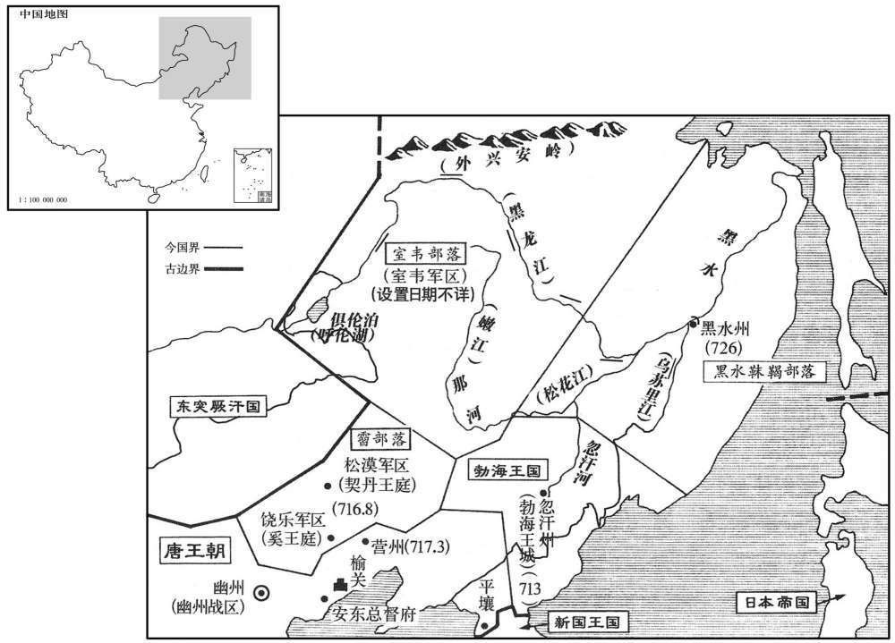
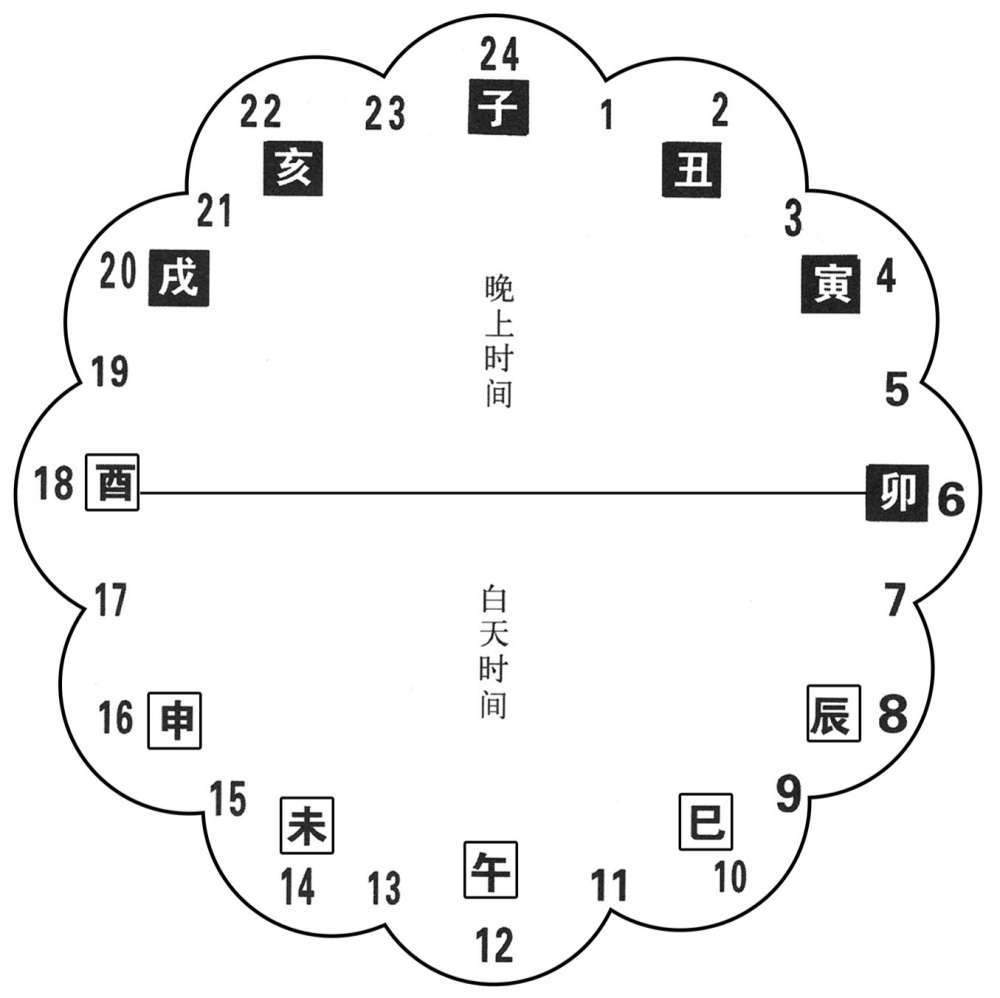
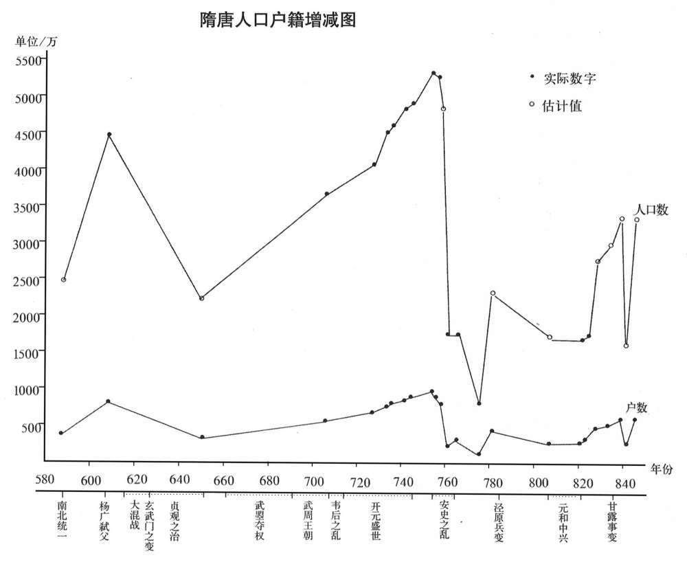

卷次与人物目录 / 卷213
资治通鉴 · 卷第二百一十三【唐纪二十九】
公元726年至公元733年 · 原文、白话与胡三省注
本页按胡注本编排保存全卷内容。白话采用本站所据译本，未可靠对应的内容另列说明；事件标题用于定位，并非原书文字。
本卷共142段原文，139段有译文对应，3段缺译或待核对。
卷第二百一十三【唐纪二十九】起柔兆摄提格（丙寅），尽昭阳作噩（癸酉），凡八年。
卷首原文与注释
玄宗至道大圣大明孝皇帝中之上
公元726年 · 唐玄宗至道大圣大明孝皇帝开元十四年
开元十四年〔（丙寅、七二六）〕
上传原文的注释括号有异常，字符原样保留；无法可靠划分的段落默认全文显示。
本年事件索引（现代整理）
- 契丹王李邵固、奚王李鲁苏改封并迎娶唐公主
- 张说请学士校订唐朝五礼
- 梁大海等攻占宾州、横州叛乱
- 崔隐甫任御史大夫，与张说结怨
- 宇文融、崔隐甫等弹劾张说并奉命审讯
- 李元纮任中书侍郎、同平章事
- 张说被罢中书令，保留其他官职
- 岐王李范去世，玄宗撤膳哀悼
- 李子峤冒称皇子，被杖杀
- 在定、恒等五州设置军队防备突厥
- 玄宗曾欲立武惠妃为皇后，听劝后作罢
- 户部统计全国户口达四千余万
- 河南、河北洪水淹死千余人
- 魏州报告黄河泛滥
- 杜暹任同平章事
- 杜暹等人在安西治理有方，获当地称赞
- 玄宗巡幸汝州广成汤
- 玄宗巡幸寿安并在方秀川狩猎
- 杨思勖平定邕州叛乱，擒斩梁大海
- 黑水靺鞨遣使入贡，唐朝设置黑水州
- 渤海王大武艺攻打黑水，胞弟大门艺逃唐
- 司马光批评玄宗在门艺案中失信于小国
- 杜暹拒绝突骑施公主使者，苏禄随后侵扰四镇
春，正月，癸未，更立契丹松漠王李邵固为广化王，奚饶乐王李鲁苏为奉诚王。〔契，欺讫翻。乐，音洛〕以上从甥陈氏为东华公主，妻邵固；〔从，才用翻。妻，七细翻；下同。考异曰：东华出降，实录在三月壬子；于此终言之。〕以成安公主之女韦氏为东光公主，〔成安公主，中宗之女，下嫁韦捷〕。妻鲁苏。
春季，正月，癸未（初四），唐玄宗将契丹松漠王李邵固改立为广化王，将奚族饶乐王李鲁苏改立为奉诚王；封自己姐妹的女儿陈氏为东华公主，嫁给李邵固为妻，封中宗之女成安公主的女儿韦氏为东光公主，嫁给李鲁苏为妻。

本年形势与背景参考图
张说奏：「今之五礼，贞观、显庆两曾修纂，〔说，读曰悦。观，古玩翻。〕前后颇有不同，其中或未折衷。〔衷，竹仲翻。宋均曰：折，断也；中，当正也；若折断其物，与度相中当也。〕望与学士等讨论古今，删改施行。」制从之。
张说奏道：“如今的五礼，经过贞观、显庆年间两次编撰修改，前后有很多不同之处，其中有些尚有所偏颇。希望允许我和学士等人对古今的礼仪进行讨论研究，酌情对五礼作适当的增删修改，然后颂布施行。”唐玄宗采纳了张说的建议。
邕州封陵獠梁大海等据宾、横州反；〔封陵本山峒，唐世以渐开拓，干元后始置为县。宾州，汉领方县地，属郁林郡。梁置领方。邵隋废郡为县，属郁州。唐初属南方州。贞观五年分置宾州。横州，汉广郁、高梁县地。江左置宁浦郡。隋废郡为县，属郁州。唐初分置简州，贞观八年改曰横州。〕二月，己酉，遣内侍杨思勖发兵讨之。〔考异曰：旧纪作「庚戊朔」，今从实录。〕
邕州封陵县獠人梁大海等人占据宾州和横州造反。二月，己酉（疑误），唐玄宗派内侍杨思勖调兵前去讨伐。
上召河南尹崔隐甫，欲用之，中书令张说薄其无文，奏拟金吾大将军；前殿中监崔日知素与说善，说荐为御史大夫；上不从。丙辰，以日知为左羽林大将军，丁已，以隐甫为御史大夫。隐甫由是与说有隙。
唐玄宗召见河南尹崔隐甫，准备重用他。中书令张说鄙薄崔隐甫没有文采，就向唐玄宗提议让他当金吾大将军；前殿中监崔日知一向与张说关系好，张说就举荐他当御史大夫。但唐玄宗没有听从张说的建议。丙辰（初七），唐玄宗任命崔日知为左羽林大将军；丁巳（初八），任命崔隐甫为御史大夫。崔隐甫从此与张说有了矛盾。
说有才智而好贿，百官曰事有不合者，好面折之，至于叱骂。恶御史中丞宇文融之为人，〔好呼到翻。折，之舌翻。恶，乌路翻。〕且患其权重，〔宇文既居风宪之地，又贰户部，故患其权重。〕融所建白，多抑之。中书舍人张九龄言于说曰：「宇文融承恩用事，辩给多权数，不可不备。」说曰：「鼠辈何能为！」夏，四月，壬子，隐甫、融及御史中丞李林甫共奏弹说「引术士占星，徇私僭侈，受纳贿赂。」〔弹，徒丹翻，贿罪翻。〕敕源干曜及刑部尚书韦抗、大理少卿明〔【严：「明」改「胡」。】〕珪与隐甫等同于御史台鞫之。林甫；叔良之曾孙；〔长平王叔良，高祖从父弟。〕抗，安石之从父兄子也。〔韦安石历事武后、中宗，贬死于开元之初。从，才用翻〕
张说很有才学智谋，但贪财，百官陈述事情有不符合他心意的地方，他喜欢当面驳斥，甚至大声呵斥谩骂。他厌恶御史中丞宇文融的为人，而且还担心宇文融的权力上升，因此对宇文融所提出的建议，大多加以压制。中书舍人张九龄对张说说：“宇文融蒙受恩宠掌握大权，又能言善辩，很会耍弄权术，您对他不能不有所防备。”张说轻蔑地说：“鼠辈能有什么作为！”夏季，四月，壬子（初四），崔隐甫、宇文融和御史中丞李林甫一起向唐玄宗上书，弹劾张说：“请来术士观星象以测吉凶，还徇私舞弊，收受贿赂，过份奢侈”。唐玄宗命令源乾曜和刑部尚书韦抗、大理少卿明与崔隐甫等人一起在御史台审讯张说。李林甫是李叔良的曾孙，韦抗是韦安石堂兄的儿子。
丁已，以户部侍郎李元纮为中书侍郎、同平章事。元纮以清俭着，故上用为相。
两版字句有差异，建议核对原文。
丁巳（初九），唐玄宗任命户部侍郎李元为中书侍郎、同平章事。李元一向以清廉俭朴著称，因此唐玄宗任用他当宰相。
源干曜等鞫张说，事颇有状，上使高力士视说，力士还奏：「说蓬首垢面，席笹，食以瓦器，惶惧待罪。」上意怜之。力士因言说有功于国，上以为然。庚申，但罢说中书令，余如故。〔说，读为悦。〕
源乾曜等人审问张说，事情颇有眉目。唐玄宗派高力士探视张说，高力士回来对唐玄宗说：“张说头发散乱，满脸污垢，坐卧在稻草垫子上，用瓦盆吃饭，惊慌恐惧地等候处分。”唐玄宗心里很怜悯张说。高力士趁机说张说对国家有过功劳，唐玄宗认为他讲得很对。庚申（十二日），唐玄宗只罢免了张说的中书令职务，其余的官职不变。
丁卯，太子太傅岐王范薨，赠谥惠文太子。上为之撤膳累旬，〔为，于伪翻。〕百官上表固请，〔上，时掌翻。〕然后复常。
丁卯（十九日），太子太傅岐王李范去世，唐玄宗赠给他惠文太子的谥号。由于李范去世，唐玄宗连续撤去御膳几十天，百官上书再三恳求，才恢复常规。
丁亥，太原尹张孝嵩奏，「有李子峤者，自称皇子，云生于潞州，母曰赵妃。」上命杖杀之。
丁亥（初十），太原尹张孝嵩向唐玄宗上书说：“有个叫李子峤的人，自称是皇子，说生在潞州，母亲叫赵妃。”唐玄宗命令张孝嵩用杖刑将此人打死。
辛丑，于定、恒、莫、易、沧五州置军以备突厥。〔定州置北平军，恒州置恒阳军，莫州置唐兴军，易州置高阳军，沧州置横海军。恒，户登翻。〕
辛丑（二十四日），朝廷在定州、恒州、莫州、易州、沧州分别建置北平军、恒阳军、唐兴军、高阳军、横海军，以防备突厥的侵犯。
上欲以武惠妃为皇后，或上言：「武氏乃不戴天之雠，岂可以为国母！人间盛言张说欲取立后之功，更图入相之计。〔上，时掌翻。相，息亮翻。〕且太子非惠妃所生，惠妃复自有子，若登宸极，太子必危。」上乃止。〔复扶又翻。考异曰：唐会要云：「待御史潘好礼闻上欲以惠妃为皇后，进疏谏曰：『臣闻礼记曰：「父母之雠不可共戴天。」公羊传曰：「子不复父雠，不子也。」昔齐襄公复九世之雠，丁兰报木母之怨。陛下岂得欲以武氏为国母，当何见天下之人乎！又，不亦取笑于天下乎！又，惠妃再从叔三思、再从父，延秀等，并干纪乱常，递窥神器，豺狼同穴，枭獍共林。且匹夫匹妇欲结发为夫妻者，尚相拣择，况陛下是累圣之贵，天子之尊乎！伏愿详察古今，鉴戒成败，慎择华族之女，必在礼义之家，称神祇之心，允亿兆之望。又见人间盛言，尚书右丞相张说自被停知政事之后，每谄附惠妃，欲取立后之功，更图入相之计。伏愿杜之于将渐，不可悔之于已成。且太子本非惠妃所生，惠妃复自有子，若惠妃一登宸极，则储位实恐不安；古人所以谏其渐者，良为是也。昔商山四皓，虽不食汉庭之禄，尚能辅翊太子，况臣忝宪府。』苏冕驳曰：「此表非潘好礼所。且好礼，先天元年为侍御史，开元十二年为温州刺史致仕。表是十四年献，而云『职忝宪府』。若题年恐错，则武惠妃先天元年始年十四，王皇后有宠未衰，张说又未为右丞相。意未知此表是谁献之」今除其名。〕然宫中礼秩，一如皇后。
唐玄宗想立武惠妃为皇后，有人上书说：“您与武氏有不共戴天之仇，怎么能立她为国母？民间盛传张说想谋取册立皇后之功，进而再作担任宰相的打算。况且太子不是武惠妃所生，她自己又有儿子，如果她登上皇后之位，太子必然很危险。”唐玄宗听后才打消了这个念头，但武惠妃在宫中的礼仪级别，一切都如同皇后。
五月，癸卯，户部奏今岁户七百六万九千五百六十五，口四千一百四十一万九千七百一十二。
五月，癸卯（二十六日），户部向唐玄宗报告，今年全国共有七百零六万九千五百六十五户，共四千一百四十一万九千七百一十二人。
秋，七月；河南、北大水，溺死者以千计。〔溺，奴狄翻。〕
秋季，七月，黄河南北地区发大水，数以千计的人被淹死。
八月，丙午朔，魏州言河溢。
八月，丙午朔（初一），魏州报告黄河泛滥。
九月，己丑，以安西副大都护、碛西节度使杜暹同平章事。〔碛，七迹翻。暹，息廉翻
两版字句有差异，建议核对原文。
九月，己丑（十五日），唐玄宗任命安西副大都护、碛西节度使杜暹为同平章事。
自王孝杰克复四镇，〔复四镇见二百五卷武后长寿元年。〕复于龟兹置安西都护府，〔复扶又翻。龟兹，音丘慈。〕以唐兵三万戍之，百姓苦其役；为都护者，惟田杨名、郭元振、张嵩及暹皆有善政，为人所称。
自从王孝杰收复龟兹、疏勒、于阗、焉耆四镇后，朝廷又在龟兹设置安西都护府，派遣三万军队驻守这个地区，老百姓深受远戍安西的兵、徭役之苦。在历任安西都护中，只有田杨名、郭元振、张嵩和杜暹都有一些好的政绩，因而被人们所称颂。
冬，十月，庚申，上幸汝州广成汤；〔考异曰：令狐峘代宗实录云：「上以开元十四年十月十三日生，时玄宗幸汝州之温汤，有望气者云，宫中有天子气，玄宗即日还宫，是夜代宗降诞。「按玄宗实录，此月十六日庚申始幸温汤，己已乃还宫，与代宗实录不同。旧纪云「十二月十三日生」。旧后妃传：「章敬皇后吴氏坐父事没入掖庭，开元二十三年，玄宗幸忠王邸，见王服御萧然，傍无媵侍，命将军高力士选掖庭宫人以赐之，而吴后在藉中；明年，生代宗皇帝，十八年薨。」按代宗此年生，而云二十三年以吴后赐忠王，十八年薨，盖误以十三年为二十三年也。次柳氏旧闻：「肃宗在东宫为李林甫所构，势几危者数矣，无何，须鬓斑白。尝早朝，上见之，愀然曰：『汝归第，吾当幸汝。』及至上，顾见宫庭殿宇皆不洒扫，而乐器尘埃，左右使令无有妓女。上为之动色，使力士诏掖庭按籍阅视得三人，乃以赐以太子，而章敬吴皇后在选中，生代宗。」按开元二十三年，李林甫初为相，二十五年废太子瑛，二十六年乃立肃宗为太子，天宝五年李林甫始构韦坚之狱。旧闻所记，事皆虚诞，年月不合。新书后妃传全取之，今皆不取。按汉广成苑在唐汝州梁县界，其地有汤泉。〕己酉，〔【严：「酉」改「「已」。】〕还宫。
冬季，十月，庚申（十六日），唐玄宗来到汝州广成汤；十二月，己酉（初六），回皇宫。
十二月，丁已，上幸寿安，猎于方秀川；壬戍，还宫。
两版字句有差异，建议核对原文。
十二月，丁巳（十四日），唐玄宗到寿安，在方秀川狩猎；壬戌（十九日），回皇宫。
杨思勖讨反獠，〔獠，鲁皓翻〕。生擒梁大海等三千余人，斩首二万级而还。〔还，从宣翻，又如字。
两版字句有差异，建议核对原文。
杨思勖讨伐反叛的獠人，活捉梁大海等三千余人，斩首两万级，得胜而回。
是岁，黑水靺鞨遣使入见；〔黑水靺鞨在流鬼国西南，女真即其遗种也，靺鞨，音末曷。见，贤遍翻。〕上以其国为黑水州，仍为置长史以镇之。〔「长史」恐当作「长吏」。仍为，于伪翻。
两版字句有差异，建议核对原文。
这一年，黑水派使节到长安晋见唐玄宗。唐玄宗在黑水国设立黑水州，并为它设置长史以镇守这个地区。
勃海靺鞨王武艺曰：「黑水入唐，道由我境。往者请吐屯于突厥，〔突厥置吐屯以领诸附从之国。厥，九勿翻。〕先告我与我偕行；今不告我而请吏于唐，是必与唐合谋，欲腹背攻我也。」遣其母弟门艺与其舅任雅将兵击黑水。〔将，即亮翻；下同。〕门艺尝为质子于唐，〔质，音致。〕谏曰：「黑水请吏于唐，而我以其故击之，是叛唐也。唐，大国也。昔高丽全盛之时，强兵三十余万，不遵唐命，扫地无遗。〔扫地无遗，言国亡无遗育也；事见太宗、高宗纪。丽，力知翻。〕况我兵不及高丽什之一二，一旦与唐为怨，此亡国之势也。」武艺不从，强遣之。〔强，其两翻。〕门艺至境上，复以书力谏。武艺怒，遣其从兄大壹夏代之将兵，召，欲杀之。门艺弃众，间道来奔，〔复，扶夕翻。夏，户雅翻。从，才用翻。间，古苋翻。〕制以为左骁卫将军。武艺遣使上表罪状门艺，请杀之。〔骁，坚尧翻。使，疏吏翻。上，时掌翻。〕上密遣门艺诣安西；留其使者，别遣报云，已流门艺于岭南。武艺知之，上表称「大国当示人以信，岂得为此欺诳﹖」〔诳，居况翻。〕固请杀门艺。上以鸿胪少卿李道邃、源复不能督察官属，致有漏泄，皆坐左迁。〔唐九寺皆有少卿二人。鸿胪掌四夷之客，故以漏泄为罪。胪，陵如翻。少，始照翻。〕暂遣门艺诣岭南以报之。
勃海王大武艺认为：“由黑水前往唐朝，要路经我的辖境。过去他们向突厥请求派吐屯时，都事先告诉我并且和我一起行动；如今他们不告诉我就请求唐朝派官员，这必定是与唐朝一起谋划，想从腹背两面来夹攻我。”于是，大武艺派他的同母弟弟大门艺和舅父任雅率军进攻黑水。大门艺曾经在唐朝当过质子，他规劝大武艺说：“黑水向唐朝请求派官员，而我们因为这个原因而进攻它，这分明是反叛唐朝。唐朝是个强大的国家，过去高丽国在全盛时期，有三十万精兵，不遵从唐朝的命令，最后落得个亡国的下场。何况我们的军队还不到高丽国的十分之一二，一旦与唐朝结下怨仇，那面临的就是亡国的结局了。”大武艺没有听从他的话，强行派大门艺去进攻黑水国。大门艺到了边境，又送书信竭力劝谏大武艺。大武艺大怒，派他的堂兄大壹夏代替大门艺率领军队，并召大门艺回去，想杀死他。大门艺抛下军队，走偏僻小路投奔唐朝，唐玄宗下令任命他为左骁卫将军。大武艺派使节上表，列数大门艺的罪状，请唐玄宗杀了大门艺。唐玄宗秘密地派大门艺到安西去，同时设法留住了大武艺的使节，另外又派人对大武艺说已将大门艺流放到岭南。大武艺知道实情，又上表声称：“大国理当向人显示信用，怎么能做这种欺诈骗人的事？”坚持请求唐玄宗杀掉大门艺。唐玄宗认为鸿胪少卿李道邃和源复没能监督好下属官员，导致将有关大门艺的情况泄漏出去，于是把他们都降了职，又派大门艺暂时到岭南去，以便于答复大武艺。
史家评论 · 原文及其白话
臣光曰：王者所以服四夷，威信而已。门艺以忠获罪，自归天子；天子当察其枉直，赏门艺而罚武艺，为政之体也。纵不能讨，犹当正以门艺之无罪告之。今明皇威不能服武艺，恩不能庇门艺，顾效小人为欺诳之语以取困于小国，乃罪鸿胪之漏泄，不亦可羞哉！
臣司马光曰：帝王之所以能使四方小国敬服，靠的是威望和信誉。大门艺因为忠诚而获罪，只好独自归附大唐天子；唐天子理应明察事情的曲直，奖赏大门艺，惩罚大武艺，这是治理政事的根本原则。对大武艺纵然不能讨伐，也应当严正地告诉他大门艺无罪。如今，唐玄宗的威望不能使大武艺降服，恩泽又不能庇护大门艺，只是效法小人说一些欺诈骗人的话，以至在小国面前陷入窘困的境地，却怪罪鸿胪寺的官员泄漏秘密，这不也应该感到羞耻吗！
杜暹为安西都护，突骑施交河公主遣牙官以马千匹诣安西互市。使者宣公主教，〔暹，息廉翻。骑，奇寄翻。使，疏吏翻；下同。〕暹怒曰：「阿史那女〔交河公主，阿史那怀道之女。〕何得宣教于我！」杖其使者，留不遣；马经雪死尽。突骑施可汗苏禄大怒，发兵寇四镇。会暹入朝；〔使，疏吏翻。朝，直遥翻；下同。〕赵颐贞代为安西都护，婴城自守；四镇人畜储积，皆为苏禄所掠，〔畜，许救翻。〕安西仅存。既而苏禄闻暹入相，稍引退，〔相，息亮翻。〕寻遣使入贡。
杜暹任安西都护时，突骑施交河公主派牙官赶着一千多匹马到安西去出售，又派使者向杜暹宣读交河公主的命令，杜暹恼怒地说：“阿史那怀道的女儿，有什么资格向我宣读命令！”他命令杖打使者，将他扣留；马匹经过一场大雪全部被冻死。突骑施可汗苏禄勃然大怒，就派军队进犯安西四镇。这时杜暹恰好到长安朝见天子，由赵颐贞代任安西都护，他环城自守；四镇的老百姓、牲畜和储存的东西，全部被苏禄抢劫一空，只剩下一座安西城。不久，苏禄听说杜暹当了宰相，才逐渐地将军队撤走，随即又派使者向唐朝进献贡品。
公元727年 · 唐玄宗至道大圣大明孝皇帝开十五年
十五年〔（丁卯、七二七）〕
上传原文的注释括号有异常，字符原样保留；无法可靠划分的段落默认全文显示。
本年事件索引（现代整理）
- 王君㚟在青海以西大破吐蕃
- 张说劝玄宗接受吐蕃求和以减轻边民负担
- 王君㚟追击吐蕃获胜，玄宗更加重视边功
- 刘宗器所开新汴渠淤塞，被贬后旧渠疏通
- 张说被迫致仕，崔隐甫免官，宇文融外任
- 玄宗下令逃户逾期归籍者按白丁纳租服役
- 诸皇子遥领州牧、节度使及大都护等职
- 玄宗将皇子安置于十王宅，严控出入
- 玄宗命宫中妃嫔养蚕，贵近获赐丝
- 冀州黄河泛滥
- 苏颋去世
- 吐蕃攻陷瓜州，王君㚟不敢出战
- 贾师顺坚守常乐县，迫使吐蕃撤退
- 王君㚟构陷河曲四部，致多位首领被流放
- 毗伽可汗献上吐蕃联合入寇书，获准互市
- 吐蕃与突骑施围攻安西，被赵颐贞击退
- 回纥护输伏击杀害王君㚟并投奔吐蕃
- 唐玄宗自东都返回长安
- 李祎任朔方节度副大使
- 张守珪设宴退吐蕃并修复瓜州
- 萧嵩离间吐蕃
- 唐廷部署诸道兵防秋击吐蕃
- 唐玄宗幸骊山温泉
春，正月，辛丑，凉州都督王君勠破吐蕃于青海之西。〔勠，丑略翻。吐，从暾入声。〕
春季，正月，辛丑，（二十八日），凉州都督王君在青海西边打败了吐蕃。
初，吐番自恃其强，致书用敌国礼，〔事见二百十一卷二年。〕辞指悖慢，〔悖，蒲内翻，又蒲没翻。〕上意常怒之。返自东封，张说言于上曰：「吐蕃无礼，诚宜诛夷，但连兵十余年，甘、凉、河、鄯，不胜其弊，〔鄯，时战翻，又音善。胜，音升。〕虽师屡捷，所得不偿所亡。闻其悔过求和，愿听其款服，以纾边人。」上曰：「俟吾与王君勠议之。」说退，谓源干曜曰：「君勠勇而无谋，常思侥幸，侥，坚尧翻。〕若二国和亲，何以为功！吾言必不用矣。」及君勠入朝，果请深入讨之。
当初，吐蕃自恃强大，向唐朝致书采用两国对等的礼节，言词违逆傲慢，唐玄宗常常为此而愤怒。唐玄宗从泰山封禅返回后，张说对他说：“吐蕃对我国无礼，确实应该讨伐平定它，但十余年接连打仗，甘、凉、河、鄯等地再也承受不住战争的祸害了，虽然出师屡屡获胜，但是得不偿失。听说吐蕃想悔过求和，希望您能接受他们的诚心归服，以解除边境人民的困苦。”唐玄宗说：“等我和王君商量后再说。”张说退朝后，对源乾曜说：“王君有勇无谋，常想着侥幸取胜。如果两国和亲，他拿什么作为自己的功劳呢？我的话一定不会被皇上采纳。”等到王君进朝，果然请求唐玄宗让他率领军队深入吐蕃国境内讨伐。
去冬，吐蕃大将悉诺逻寇大斗谷，〔将，即亮翻。逻，即佐翻。〕进攻甘州，焚掠而去。君勠度其兵疲，勒兵蹑其后，〔度，徒洛翻。蹑，尼辄翻。考异曰：吐蕃传云；「君勠畏其锋不敢出。」今从君勠传。〕会大雪，虏冻死者甚众，自积石军西归。〔廓州达化县西有积石军，本静边槙，仪凤二年为军，东有黄沙戍。〕君勠先遣人间道入虏境，烧道旁草。悉诺逻至大非川，欲休士马，而野草皆尽，马死过半。君勠与秦州都督张景顺追之，及于青海之西，乘冰而度。悉诺逻已去，破其后军，获其辎重羊马万计而还。〔间，古苋翻。重，直用翻。考异曰：君勠传曰：「十六年冬，吐蕃大将悉诺逻帅众入寇大斗谷，又移攻甘州，焚烧市里而去。君勠袭其后，败之于青海之西」据实录及吐蕃传，入寇在十四年冬；此云十六年冬，误也。〕君勠以功迁左羽林大将军，拜其父寿为少府监致仕。上由是益事边功。
去年冬天，吐蕃大将悉诺逻进犯大斗谷，进攻甘州，烧杀抢劫后退走。王君推测悉诺逻的军队一定很疲乏，就带兵偷偷地跟在他们后边。适逢天降大雪，吐蕃军队很多人被冻死，便经由积石军西归吐蕃。王君抢先派人从偏僻小道进入敌方境内，烧掉路边的野草。悉诺逻到了大非川，打算让士兵战马休息一下，但这里的野草已全部被烧光了，结果战马死了一半多。王君和秦州都督张景顺率领军队追击，在青海的西边追上了悉诺逻，趁湖水结冰越过青海。这时悉诺逻已离开，他们打败了悉诺逻的后军，缴获数以万计的辎重羊马后返回。王君由于立了大功，被擢升为左羽林大将军，唐玄宗又授予王君的父亲王寿以少府监退休。从此，唐玄宗更加追求建立边功。


初，洛阳人刘宗器上言，请塞汜水旧汴口，更于荧泽引河入汴；〔隋开皇四年分荥阳置广武县，仁寿元年更名荧泽，属郑州。上，时掌翻。塞，悉则翻；下同。汜，音祀。汴，皮变翻。〕擢宗器为左卫率府冑曹。〔率，所律翻。〕至是，新渠填塞不通，贬宗器为循州安怀戍主。命将作大匠范安及发河南、怀、、郑、汴、滑、卫三万人疏旧渠，旬日而毕。
起初，洛阳人刘宗器上书，请求堵塞汜水旧汴口，改从荧泽引黄河的水流入汴水。唐玄宗提拔刘宗器任左卫率府胄曹。到这时，新渠堵塞不通，唐玄宗将刘宗器贬为循州安怀戍主；又命令将作大匠范安及征调河南、怀州、郑州、汴州、滑州、卫州三万民工疏通旧渠，用十天时间就完工了。
御史大夫崔隐甫、中丞宇文融，恐右丞相张说复用，数奏毁之，各为朋党。上恶之，〔复，扶又翻。数，所角翻。恶路翻。〕二月，乙已，制说致仕，隐甫免官侍母，融出为魏州刺史。
御史大夫崔隐甫、御史中丞宇文融害怕尚书右丞相张说被重新起用，多次上奏诋毁他。他们各自结成朋党，明争暗斗。唐玄宗很厌恶他们的做法，二月，乙巳（初二），命令张说退休，崔隐甫免职回家侍奉他的母亲，宇文融离京任魏州刺史。
乙卯，制；「诸州逃户，先经劝农使括定按比后复有逃来者，随到准白丁例输当年租庸，有征役者先差。」〔使，疏吏翻。复，扶夕翻；下不复同。差，初佳翻。
两版字句有差异，建议核对原文。
乙卯（十二月），唐玄宗下令：“各州逃亡外地没有户籍的民户，在先前经过劝农使搜求检查核定户籍以后，再有逃到某地的，到后即按平民之例缴纳当年的租庸，如有征役先派他们。”
夏，五月，癸酉，上悉以诸子庆王潭等领州牧、刺史、都督、节度大使、大都护、经略使，〔使，疏吏翻。〕实不出外。
夏季，五月，癸酉（初一），唐玄宗让他的儿子庆王李潭等担任州牧、刺史、都督、节度大使、大都护、经略使等职务，但实际上他们并不离京到外地去任职。
初，太宗爱晋王，〔晋王治，是为高宗〕不使出合；豫王亦以武后少子不出合，及自皇嗣为相王，始出合。中宗之世，谯王失爱，谪居夕州；温王年十七，犹居禁中。〔谯王，重福。温王，重茂。〕上即位附苑荿为十王宅，〔朱雀街东第五街有安国寺，寺东附苑城为大宅，分处十王。十王，谓庆、忠、棣、鄂、荣、仪、台、颖、永、济也。后盛、寿、陈、丰常、凉六王又就封入内宅，是为十六宅。〕以居皇子，宦官押之，就夹城参起居，自是不复出合；虽开府置官属及领藩镇，惟侍读时入授书，〔欧阳修曰，唐王府侍读无定员。〕自余王府官属，但岁时通名起居；其藩镇官属，亦不通名。及诸孙浸多，又置百孙院。太子亦不居东宫，常在乘舆所幸之别院。〔乘，绳证翻。〕
当初，唐太宗疼爱晋王李治，不让他离宫自居于王府，豫王也因为是武后的小儿子而没有离宫自居于王府，直到由皇嗣改封为相王，才离宫居于王府。唐中宗的时候，谯王李重福失宠，被中宗谪往外州居住；温王李重茂年已十七岁，还住在皇宫里。唐玄宗登上皇位，在紧挨禁苑的地方建造十王宅，以便让皇子居住，派宦官监督他们，都由夹城入大明宫参见请安，各皇子从此不再离宫自居于王府；即使他们建立府署，设置属官及担任地方长官，也只有侍读按时入宅教书，其余王府属官，则只是在每年的一定时间前来通报姓名请安，至于他们在地方官府的属吏，则连通报姓名请安也免除了。后来皇孙逐渐增加，又建造了百孙院。太子一般也不住在东宫，而是常常住在皇帝所到的皇宫别院里。
上命妃嫔以下宫中育蚕，欲使之知女功。丁酉，夏至，赐贵近丝，人一綟。〔杜佑曰：唐令，鼦六两为屯，丝五两为绚，麻三斤为綟。未知丝綟轻重何如。綟，郎计翻。〕
唐玄宗命令后宫妃嫔以下的人在宫中养蚕，想借此让她们懂得一些妇女应做的事。丁酉（二十五日），夏至，唐玄宗赐给后宫中位尊而为天子所亲近的人每人一丝。
秋，七月，戊寅，冀州河溢。
秋季，七月，戊寅（初八），冀州黄河泛滥。
己卯，礼部尚书许文宪公苏颋薨。〔颋，他鼎翻。〕
己卯（初九），礼部尚书许文宪公苏去世。
九月，丙子，吐蕃大将悉诺逻恭及烛龙莽布支攻陷瓜州，执刺史田元献及河西节度使王君勠之父，进攻玉门军；〔按王君勠之父寿以少府监致伙居乡里。玉门军在肃州之西二百里。宋白曰：肃州西门县，汉罢玉门关屯，徙其人于此，故曰玉门县。石门周匝山间，经二十里，众流北入延兴海。〕纵所虏僧〔【严：「僧」改「俘」。】〕使归凉州，谓君勠曰：「将军常以忠勇许国，何不一战！」君勠登城西望而泣，竟不敢出兵。
九月，丙子（初七），吐蕃大将悉诺逻恭禄和烛龙莽布支攻破瓜州，捉获瓜州刺史田元献和河西节度使王君的父亲，接着又进攻玉门军；还放回所俘虏的僧人，让他们返回凉州，对王君说：“将军您常以忠勇报效国家，现在为什么不出城决一死战？”王君登上城楼，向西远望而哭泣，竟然不敢出兵。

莽布支别攻常乐县，〔宋白曰：常乐县属瓜州，魏之宜禾郡，前凉之凉兴县地，凉武昭王于二危山东置常乐镇，唐武德五年改置常乐县。〕县令贾师顺帅众拒守。〔乐，音洛，帅，读曰率。〕及瓜州陷，悉诺逻悉兵会攻之。旬余日，吐蕃力尽，不能克，使人说降之；〔说，式苪翻。降，户江翻。〕不从。吐蕃曰：「明府既不降，宜敛城中财相赠，吾当退。」师顺请脱士卒衣；悉诺逻知无财，乃引去，毁瓜州城。师顺遽开门，收器械，修守备；虏果复遣精骑，还视城中，知有备，乃去。〔田元献不能守瓜州而贾师顺能守常乐，固圉固存乎其人也。复，扶夕翻。觇，丑廉翻，又丑艳翻。〕师顺，岐州人也。
烛龙莽布支另外又攻打常乐县。常乐县令贾师顺带领部下坚守。等到瓜州陷落，悉诺逻恭禄集中全部兵力攻打常乐城。打了十多天，吐蕃军队精疲力尽，仍然不能攻下常乐城，悉诺逻恭禄派人来劝降，贾师顺断然拒绝。吐蕃派来的人说：“既然您不愿投降，就应收集城中的财物送给我们，那样我们就会退走。”贾师顺请他脱士兵的衣服；悉诺逻知道城中没有多少财物，就带领军队退走，同时毁坏了瓜州城。贾师顺急速打开城门，收集军事器械，整修防守设施，敌军果然又派精锐的骑兵返回，看到城中的情况，知道已有防备，只好又退走了。贾师顺是岐州人。
初，突厥默啜之强也，迫夺铁勒之地，故回纥、契苾、思结、浑四部度碛徙居甘、凉之间以避之。〔啜，叱劣翻。纥，下没翻。，契欺讫翻。苾，毗必翻。〕王君勠微时，往来四部，为其所轻；及为河西节度使，以法绳之。四部耻怨，密遣使诣东都自诉。君勠遽发驿奏「四部难制，潜有叛计」上遣中使往察之，〔使，疏吏翻。〕诸部竟不得直。于是瀚海大都督回纥承宗流瀼州，〔瀼，如羊翻；杜佑曰：而章翻。〕浑大德流吉州，贺兰都督契苾承明流藤州，〔藤州，汉苍梧、猛陵县地，晋置永平郡，隋置藤州。〕卢山都督结归国流琼州；以回纥伏帝难为瀚海大都督。己卯，贬右散骑常侍李令问为抚州别驾，〔旧志：无州，京师东南三千三百一十二里。〕坐其子与承宗交游故也。
当初，突厥默啜十分强盛，强夺铁勒的辖地，因此回纥、契、思结、浑四个部族穿越沙漠，移居到甘州和凉州之间，以躲避突厥的欺凌。王君未得志的时候，常往来于这四个部族之间，受到他们的轻视，等到他当了河西节度使，就利用法律惩治他们。这四个部族感到耻辱怨恨，便偷偷地派使者到东都洛阳告状。王君迅速通过驿站上奏道：“这四个部族难以制服，他们暗地里有叛乱的计划。”唐玄宗派宦官调查，这几个部族蒙受的冤屈竟不能平反。结果，瀚海大都督回纥人承宗被流放到州，浑人大德被流放到吉州，贺兰都督契人承明被流放到藤州，卢山都督思结人归国被流放到琼州；唐玄宗任命回纥人伏帝难为瀚海大都督。己卯（初十），将右散骑常侍李令问降职为抚州别驾，其原因是他儿子与回纥人承宗有交往。
丙戍，突厥毗伽可汗遣其大臣梅录啜入贡。吐蕃之寇瓜州也，遗毗伽书，欲与之俱入寇，〔遗，于季翻。〕毗伽并献其书。上嘉之，听于西受降城为互市，〔降，户江翻。〕每岁赍缣帛数十万匹就市戎马，以助军旅，且为监牧之种，〔种，章勇翻。〕由是国马益壮焉。
丙戌（十七日），突厥毗伽可汗派大臣梅录啜入朝进贡。吐蕃侵犯瓜州时，给毗伽送信，想与突厥一起侵犯唐朝，毗伽将这封信献给了唐玄宗。唐玄宗嘉奖了他，并允许突厥在西受降城与唐朝做买卖，唐朝每年派人携带几十万匹丝绸到西受降城和他们交换战马，以增加唐军的战斗力，并且作为国家监牧的种马，从此以后中国马越来越强壮了。
闰月，庚子，吐蕃赞普与突骑施苏禄围安西城，安西副大都护赵颐贞击破之。
闰九月，庚子（初二），吐蕃赞普和突骑施苏禄率领军队围攻安西城，安西副大都护赵颐贞打败了他们。
回纥承宗族子瀚海司马护输，纠合党众为承宗报仇。会吐蕃遣使间道诣突厥，王君勠帅精骑邀之于肃州。〔宋白曰：隋仁寿元年分甘州福禄县置肃州，东南至甘州赤柳间二百里，西南至瓜州界安乐烽三百四十里。〕，还至甘州南巩笔驿，〔为，于伪翻。间，古苋翻。甘州张掖县西南有巩笔驿〕护输伏兵突起，夺君勠旌节，先杀其判官宋贞，剖其心曰：「始谋者汝也。」君勠帅左右数十人力战，〔帅，读曰率。〕自朝至晡，左右尽死。护输杀君勠，载其尸奔吐蕃；凉州兵追及之，护输弃尸而走。〔考异曰：旧传云：「回纥既杀君勠，上命郭知运讨逐。」按知运九年已卒，君勠代镇凉州；旧传误也。〕
回纥承宗的同族兄弟之子瀚海司马护输，纠集亲族部下要为承宗报仇。适逢吐蕃派使者走小道前往突厥，王君带领精锐的骑兵在肃州拦截他，返回途中，来到甘州南巩笔驿时，护输的伏兵突然冲出来，抢走了王君的节度使旌节，先杀死了王君的判官宋贞，挖出他的心脏说：“最早搞阴谋的就是你。”王君带领几十个部下奋力拼杀，从早晨一直战到下午，手下的人全部战死。护输杀死了王君，用马车载着他的尸体投奔吐蕃。凉州的唐军闻讯追上了他，护输丢下王君的的尸体逃走。
庚申，车驾发东都，冬，己卯，至西京。〔「冬」字下逸「十月」二字。〕
庚申（二十二日），唐玄宗从东都洛阳启程；冬季，十月，己卯（十一日），回到西京长安。
辛已，以左金吾卫大将军信安王祎为朔方节度等副大使。祎，恪之孙也。〔吴王恪，太宗之子。祎，吁韦翻。〕以朔方节度使萧嵩为河西节度等副大使。时王君勠新败，河、陇震骇。嵩引刑部员外郎裴宽为判官，与君勠判官牛仙客俱掌军政，人心浸安。宽，漼之从弟也。〔漼，取猥翻。从，才用翻。〕仙客本鹑觚小吏，〔鹑觚县，前汉属北地郡，后汉、晋属安定郡。后魏置赵平郡，后周废郡，以县属冱州。刘昫曰：节度使置判官二人，未见品秩。鹑，如伦翻。觚，攻乎翻。〕以才干军功累迁至河西节度判官，为君勠腹心。
辛巳（十三日），唐玄宗任命左金吾卫大将军信安王李为朔方节度等副大使。李是李恪的孙子。任命朔方节度使萧嵩为河西节度等副大使。此时王君刚刚败死，整个河西、陇右地区非常震惊。萧嵩举荐刑部员外郎裴宽任判官，与王君的判官牛仙客一起掌管军政，人心才渐渐安定下来。裴宽是裴的堂弟。牛仙客原是泾州鹑觚县的小吏，依靠才干军功，经过多次升迁当上了河西节度判官，成为王君的亲信。
嵩又奏以建康军使河北张守珪为瓜州刺史，〔甘州西北百九十里祁连山有建康军。河北县属陕州。〕帅余众筑故城。皮干裁主〔诗云：缩板以载。缩板两旁，内土其中而筑之。干，亦板也。孔安国曰：旁日干。帅，读曰率。〕吐蕃猝至，城中相顾失色莫有鬬志。守珪曰：「彼众我寡，又疮痍之余，不可以矢刃相持，当以奇计取胜。」乃于城上置酒作乐。虏疑其有备，不敢攻而退。守珪纵兵击之，虏败走。守珪乃修复城市，收合流散，皆复旧业。朝廷嘉其功，以瓜州为都督府，以守珪为都督。
萧嵩又奏请唐玄宗任命建康军使河北县人张守为瓜州刺史，带领剩下的士兵百姓修筑瓜州旧城。修筑城墙用的木板刚刚立起来，吐蕃军队突然来到，瓜州城中的人都相顾失色，没有一个人还有战斗的勇气。张守说：“敌军人多，我们人少，又在战败受创之后，决不能用刀箭和他们对峙，而应当用奇计取胜。”他于是在城楼上安然地饮酒作乐。敌人怀疑他已做好准备，不敢贸然进攻而退走。张守带兵追击，敌人战败而逃。张守于是修复瓜州城，收聚流散的百姓，使他们都各自恢复原有的职业。唐玄宗嘉奖他的功劳，并将瓜州改置为都督府，任命张守为都督。
悉诺逻威名甚盛，萧嵩纵反间于吐蕃，〔间，古苋翻。〕云与中国通谋，赞普召而诛之；吐蕃由是少衰。〔少，诗沼翻。〕
悉诺逻的威名很盛，萧嵩就对吐蕃使用了反间计，说悉诺逻与中国相互勾结；吐蕃赞普召回了悉诺逻并杀死了他。从此，吐蕃逐渐衰落。
十二月，戊寅，制以吐蕃为边患，令陇右道及诸军团兵五万六千人，河西道及诸军团兵四万人〔府兵废，行一切之法团结民兵，谓之「团兵」。〕又征关中兵万人集临洮，朔方兵万人集会州防秋，至冬初，无寇而罢；伺虏入寇，〔洮，土刀翻。伺，相吏翻。〕互出兵腹背击之。
十二月，戊寅（十一日），唐玄宗下令说，由于吐蕃成为边境的祸害，特派陇右道各军以及各军征集的当地民兵五万六千人，河西道各军以及各军征集的当地民兵四万人，又征调关中兵一万人集中在临洮，朔方兵士一万人集中到会州以预防吐蕃乘秋日马肥时大举入侵。到了初冬，如没有敌人侵犯就罢兵；如侦察到敌人入侵，就交替出兵，从腹背两面夹击敌人。
乙亥，上幸骊山温泉；丙戍，还宫。
乙亥（初八），唐玄宗到骊山温泉；丙戌（十九日），回到皇宫。
公元728年 · 唐玄宗至道大圣大明孝皇帝开十六年
十六年〔（戊辰、七二）〕
上传原文件年头的数字有误；按本卷年号与相邻年份定位为728年，原字保留。
上传原文的注释括号有异常，字符原样保留；无法可靠划分的段落默认全文显示。
本年事件索引（现代整理）
春，正月，壬寅，安西副大都护赵颐贞败吐蕃于曲子城。〔败，蒲迈翻。〕
春季，正月，壬寅（初五），安西副大都护赵颐贞在曲子城打败了吐蕃军队。

时间记法参考图
甲寅，以魏州刺史宇文融为户部侍郎兼魏州刺史，充河北道宣抚使。〔宣抚使始此。使，疏吏翻；下同。〕
甲寅（十五日）唐玄宗任命魏州刺史宇文融为户部侍郎兼魏州刺史，充任河北道宣抚使。
乙卯，春、泷等州獠陈行范广州獠冯璘、何游鲁反，〔泷，闾江翻。獠，鲁皓翻。考异曰：本纪作「冯仁智」。今从杨思勖传。〕陷四十余城。行范称帝，游鲁称定国大将军，璘称南越王，欲据岭表；命内侍杨思勖发桂州及岭北近道兵讨之。
乙卯（十六日），春州、泷州等地獠人陈行范和广州獠人冯、何游鲁造反，攻破了四十余座城池。陈行范自称皇帝，何游鲁自称定国大将军，冯自称南越王，想占据岭南地区。唐玄宗命令内侍杨思勖调集桂州和岭北靠近交通要道的军队去讨伐他们。
丙寅，以魏州刺史宇文融检校汴州刺史，充河南北沟渠堤堰决九河使。〔校，古孝翻，汴，皮变翻。堰，于扇翻。使，疏吏翻。〕融请用禹贡九河故道开稻田，并回易陆运钱，官收其；利兴役不息，事多不就。
丙寅（二十九日），唐玄宗任命魏州刺史宇文融为检校汴州刺史，充任黄河南北沟渠堤堰决九河使。宇文融请求将《禹贡》所载九河的故道开垦成稻田，并且改变陆路运输钱，这样官方可以坐收利益。虽然宇文融不停地兴办工程，但事情大多数没有办成。
二月，壬申，以尚书右丞相致仕张说兼集贤殿学士。说虽罢政事，专文史之任，朝廷每有大事，上常遣中使访之〔史言张说宠顾不衰。，尚，辰羊翻。相，息亮翻。说，读为悦。使，疏吏翻。〕
二月，壬申（初六），唐玄宗任命以尚书右丞相退休的张说兼集贤殿学士。张说虽然被停止参与政事，专门负责文史的研究，但每当朝廷遇上重大事情，唐玄宗常常派中使去询问他的意见。
壬辰，改彉骑为左右羽林军飞骑。〔彉骑见上卷十三年。彉，虚郭翻，又古郭翻。骑，奇寄翻。〕
壬辰（二十六日），唐玄宗将骑改为左右羽林军飞骑。
秋，七月，吐蕃大将悉末朗寇瓜州；〔吐，从暾入声。将，即亮翻。〕都督张守珪击走之。乙已，河西节度使萧嵩、陇右节度使张忠亮大破吐蕃于渴波谷；〔据新书吐蕃传，渴波谷当在青海西。考异曰：实录、唐历、萧嵩传作「张志亮」。今从旧本纪、吐蕃传。〕忠亮追之，拔其大莫门城，〔大莫门城在九曲。〕擒获甚众，焚其骆驼桥而还。〔还，从宣翻，又如字。〕
秋季，七月，吐蕃大将悉末郎进犯瓜州，都督张守打退了他们。乙巳（十一日），河西节度使萧嵩和陇右节度使张忠亮在渴波谷把吐蕃军队打得大败，张忠亮乘胜追击，攻取了大莫门城，抓获很多俘虏，烧毁该地的骆驼桥后回师。
八月，乙已，特进张说上开元大衍历，行之。〔僧一行推大衍数立术，以应气朔及日食以造新历，故曰大衍历。上，时掌翻。〕
八月，乙巳（疑误），特进张说献上了《开元大衍历》，唐玄宗命令推行该历。
辛卯，左金吾将军杜宾客破吐蕃于祁连城下。〔祁连城在甘州张掖县祁连山。〕时吐蕃复入寇，〔复，扶又翻。〕萧蒿遣宾客将强弩四千击之。〔将，即亮翻，又音如字。〕战自辰至暮，吐蕃大溃，获其大将一人；〔将，即亮翻，又音如字。〕虏散走投山，哭声四合。
辛卯（二十八日），左金吾将军杜宾客在祁连城下打败了吐蕃军队。当时，吐蕃再次入侵，萧嵩派杜宾客带领四千名强弩手去迎击。战斗从早晨一直打到傍晚，吐蕃军队大败，唐军俘获其一名大将，敌人散乱地逃进山中，哭喊声四处回荡。
冬，十月，已卯，上幸骊山温泉；己丑，还宫。〔考异曰：实录「十二月丁卯」。又云「幸温泉宫」。不言其还。唐历，「丁卯幸温泉，丁丑还宫。」按此月已幸温泉，恐重复，不取。
本段缺少可靠对应白话，原文完整保留；未使用生成译文。
十一月，癸已，以河西节度副大使萧嵩为兵部尚书、同平章事。
十一月，癸巳（初一），唐玄宗任命河西节度副大使萧嵩为兵部尚书、同平章事。
十二月，丙寅，敕：「长征兵无有还期，人情难堪；宜分五番，岁遣一番还家洗沐，五年酬勋五转。」
十二月，丙寅（初五），唐玄宗下令：“长征兵没有回乡的日期，这是人的感情所难以忍受的。应当将兵士分为五批，每年派一批回家休假，五年中给予提高勋级五等的酬报。”
是岁，制户籍三岁一定，分为九等。
这一年，唐玄宗下令，规定户籍三年核定一次，共分为九等。
杨思勖讨陈行范，至泷州，破之，擒何游鲁、冯璘。行范逃于云际、盘辽二洞，思勖追捕，竟生擒，斩之，凡斩首六万。思勖为严，偏裨白事者不敢仰视，故用兵所向有功。然性忍酷，所得俘虏，或生剥面皮，或以刀剺发际，掣去头皮；蛮夷惮之。〔剺，里之翻。掣，昌列翻。去，羌吕翻。
杨思勖讨伐陈行范，到泷州，将他打得大败，抓获何游鲁、冯。陈行范逃到了云际、盘辽二洞，杨思勖追击搜捕，最后活捉陈行范，将他斩首。这次战斗共杀了六万人。杨思勖为人严厉，手下的偏将报告事情不敢抬头看他，因此每次出征都有功绩。然而，杨思勖性情十分残忍，他抓到的俘虏，有的活生生地被剥去脸皮，有的被用刀割开头发的边际，剥去头皮，蛮族人都非常惧怕他。
译本中未与胡注本可靠对应的内容
以下另列供核对版本差异，不并入胡注本正文。
译本所附古文
[10]冬，十月，己卯，上幸骊山温泉；己丑，还宫。
译本白话
冬季，十月，己卯（十七日），唐玄宗来到骊山温泉；己丑（二十七日），返回皇宫。
公元729年 · 唐玄宗至道大圣大明孝皇帝开十七年
十七年〔（己已、七二九）〕
上传原文的注释括号有异常，字符原样保留；无法可靠划分的段落默认全文显示。
本年事件索引（现代整理）
春，二月，丁卯，巂州都督张守素〔【严：「守」改「审」。】〕破西南蛮，拔昆明及盐城，〔昆明县属蚕州，汉定莋县地，后周置定莋镇，武德二年改置昆明县，以其地接昆明故也。县有盐有铁，筑城以卫之，故又有盐城。巂，音髓。〕杀获万人。
春季，二月，丁卯（初六），州都督张守素打败西南蛮，攻下昆明和盐城，杀死抓获敌人共达一万人。
三月，瓜州都督张守珪、沙州刺史贾师顺击吐蕃大同军，大破之。
三月，瓜州都督张守和沙州刺史贾师顺进攻吐蕃大同军，将他们打得大败。
甲寅，朔方节度使信安王祎攻吐蕃石堡城，拔之。初，吐蕃陷石堡城，留兵据之，侵扰河右，上命祎与河西、陇右同议攻取。诸将咸以为石堡据险而道远，攻之不克，将无以自还，且宜按兵观衅。〔衅，许觐翻。〕祎不听，引兵深入，急攻拔之，乃〔【章：十二行本「乃」作「仍」；乙十一行本同；孔本同；退斋校同。】〕分兵据守要害，令虏不得前。自是河陇诸军游弈，拓境千余里。上闻，大悦，更命石堡城日振武军。〔自鄯州鄯城县河源军西行百二十里至白水军，又西南六十里至定戎城，又南隔涧七里有石堡城，本吐蕃铁仞城也。宋白曰：石堡城在龙支县西，四面悬崖数千仞，石路盘屈，长三四里，西至赤岭三十里。更，工衡翻。〕
甲寅（二十四日），朔方节度使信安王李进攻吐蕃占据的石堡城，打下了该城。当初，吐蕃攻下石堡城，留下军队据守，并不断侵犯骚扰黄河以西地区。唐玄宗命令李和河西、陇右的官员一起商议如何攻取该城。众将领都认为石堡城地势险要，而且路途又远，如果攻打不下来，将没有办法平安返回，暂且还是应当按兵不动，再寻找战机。李没有听从他们的意见，率领军队深入敌境，急速攻城，打下了石堡城，又分别派兵据守要害的地方，使敌人不能前进。从此，河西、陇右各路唐军可以四处巡逻，并且拓展疆域一千余里。唐玄宗听到这消息，十分高兴，下令将石堡城改名叫振武军。
丙辰，国子祭酒杨玚上言，〔玚，雉杏翻，又音畅。上，时掌翻。〕以为：「省司奏限天下明、经进士及第，每年不过百人。窃见流外出身，每岁二千余人，而明经、进士不能居其什一，则是服勤道业之士不如胥史之得仕也。臣恐儒风浸坠，廉耻日衰。若以出身人太多，则应诸色裁损，不应独抑明经、进士也。」又奏「诸〔【章：十二行本「诸」作「主」；乙十一行本同；孔本同；张校同。】〕司帖试明经，不务求述作大指，专取难知，问以孤经绝句或年月日；请自今并帖平文。」〔唐取士之科，有进士，有明经，凡明经，先帖文，然后口试经问大义十条，答时务策三道；以文理通粗为上上、上中、上下、中上、凡四等为反第。凡进士，试时务策丕道，帖一大经；经策全通为甲第，策通四、帖过四以上为乙第。通典曰：唐制，帖经者，以所习经掩其两端，其间惟开一行，裁纸为帖，凡帖三字，随时增损，可否不一，或得四、得五、得六者为通。〕上甚然之。
丙辰（二十六日），国子祭酒杨上书认为：“尚书省有关部门上奏，要将全国考取明经、进士科的人数每年限制在一百人之内。我看到九品以外出身的，每年有两千余人，而考上明经、进士的人还不到它的十分之一。这样下去，就是勤苦从事儒业的人反不如办理文书的小吏能当官。我担心崇儒之风会因此而逐渐丧失，廉耻之心会日渐衰败。如果因为作官的人太多，就应当各类人都酌情裁减，而不能单独压缩明经、进士科的名额。”他又奏道：“主考官对应明经科考试的人考帖经，不是尽量追求弄明先圣的述作大旨，却专门选取难以知晓的章句，以义例上与别的章句没有联系的章条经文及冷僻的句子或年月日为试题。请求从现在开始考帖经都帖试一般的经文。”唐玄宗认为他说得很有道理。
夏，四月，庚午，禘于太庙。唐初，祫则序昭穆，禘则各祀于其室。〔昭，读曰続，音时遥翻。〕至是，太常少卿韦绦等奏「如此，禘与常飨不异；请禘祫皆序昭穆。」从之。绦，安石之兄子也。〔绦，土刀翻。〕
夏季，四月，庚午（初十），唐玄宗在太庙祭祖先。唐朝初期，皇帝在太庙祭时是集合远近祖先的神主按左昭右穆的次序排列进行合祭的，祭则各在太庙中列位祖先的神主所居的殿室里进行。至此时，太常少卿韦等人奏称：“这样做，祭与平常的祭祀没有两样，请批准祭也像祭那样进行合祭。”唐玄宗依从了他们的建议。韦是韦安石哥哥的儿子。
五月，壬辰，复置十道及京、都两畿按察使。〔雍、同、华、商、岐、邠为京畿。十二年，停诸道按察使，今复置。复，扶又翻，又如字。〕
五月，壬辰（初三），唐玄宗再次设置十道按察使及京、都两畿按察使。
初，张说、张嘉贞、李元纮、杜暹相继为相用事，源干曜以清自守，常让事于说等，唯诺署名而已。元纮、暹议事多异同，遂有隙，更相奏列。〔唯，于癸翻。更，工衡翻。〕上不悦，六月，甲戍，贬黄门侍郎、同平章事杜暹荆州长史，中书侍郎、同平章事李元纮曹州刺史，〔旧志，曹州，京师东北一千四百五十三里。〕罢干曜兼侍中，止为左丞相；〔开元初，改尚书左、右仆射为左、右丞相。唐初，仆射之职无所不统，是正丞相也。至中宗神龙元年豆卢钦望专为仆射，不敢预政事，是后专拜仆射者不复知政事，虽有丞相之名，非复唐初丞相之职矣。今源干曜止为左丞相，是止为尚书左仆射，不复预事也。〕以户部侍郎宇文融为黄门侍郎，兵部侍郎裴光庭为中书侍郎，并同平章事；萧嵩兼中书令，遥领河西。〔遥领河西节度使。〕
当初，张说、张嘉贞、李元、杜暹相继担任宰相执掌朝政，源乾曜为人清廉谨慎，常常把事情让给张说等人去决定，自己只是唯唯诺诺签名同意而已。李元、杜暹商议事情意见经常不同，于是就有了矛盾。他们轮流在唐玄宗面前说对方的不是，唐玄宗对此很不高兴，六月，甲戌（十五日），将黄门侍郎、同平章事杜暹降职为荆州长史，中书侍郎、同平章事李元降职为曹州刺史，罢免了源乾曜兼任的侍中，让他只担任左丞相；任命户部侍郎宇文融为黄门侍郎，兵部侍郎裴光庭为中书侍郎，一并任同平章事；任命萧嵩为中书令，让他遥遥兼任河西节度使。
开府王毛仲与龙武将军葛福顺为婚。毛仲为上所信任，言无不从，故北门诸将多附之，进退唯其指使。吏部侍郎齐澣乘言于上日：〔间，古苋翻；下离间同。〕「福顺典禁兵，〔葛福顺所典，万骑也，故云然。〕不宜与毛仲为婚。毛仲小人，宠过则生奸；不早为之所，恐成后患。」上悦曰：「知卿忠诚，朕徐思其宜。」澣曰：「君不密则失臣，〔易大传之。〕言愿陛下密之」会大理丞麻察坐事左迁兴州别驾，〔旧志，兴州至京师九百四十八里。〕澣素与察善，出城饯之，因道禁中谏语；察性轻险，遽奏之。上怒，召澣责之曰：「卿疑朕不密，而以语麻察，讵为密邪﹖且察素无行，〔语，牛倨翻。邪，音耶。行，下孟翻。〕卿岂不知邪﹖」澣顿首谢。秋，七月，丁已，下制：「澣、察交构将相，离间君臣，〔将，即亮翻。相，息亮翻。间，古苋翻。〕澣可高州良德丞，察可浔州皇化尉。」〔良德亦汉合浦县地，吴置高凉郡，陈分置务德县，后改为良德。浔州，汉布山、阿林之地，梁于布山地置桂平郡，隋废郡为县，又于阿林地置皇化县，隋癈入桂平，贞观七年置浔州，治桂平，复置皇化县属焉。〕
开府王毛仲与龙武将军葛福顺成了亲家。王毛仲很受唐玄宗的信任，唐玄宗对他的话没有不听从的，因此羽林军各将领大多依附于他，行动只听他的指使。吏部侍郎齐浣找机会向唐玄宗说：“葛福顺主管禁军，不适宜与王毛仲结为亲家。王毛仲是个小人，过分宠爱就会心生邪恶；如果不及早安排，恐怕会成为后患。”唐玄宗高兴地说：“我知道你这是一片忠诚，朕会慢慢地考虑个妥善的处理办法。”齐浣说：“君主如不保守秘密就会失去臣子，希望陛下对这事保密。”适逢大理丞麻察因事获罪，被降职为兴州别驾；齐浣一向与麻察很要好，出城为他饯行，顺便说起在宫中向唐玄宗劝谏的话。麻察生性轻薄险恶，很快就把这事报告了唐玄宗。唐玄宗勃然大怒，立即召见齐浣，斥责他说：“你怀疑我不能保密，却又把事情告诉麻察，你这样做难道是保密吗？况且麻察素来没有德行，你难道不知道吗？”齐浣拼命磕头请罪。秋季，七月，丁巳（二十九日），唐玄宗下令：“齐浣、麻察两人一起诬陷将相，离间君臣；齐浣降为高州良德县丞，麻察降为浔州皇化县尉。”
八月，癸亥，上以生日宴百官于花萼楼下。〔考异曰：实录云，「癸亥朔」。按长历，是月己未朔；癸亥，五日也。顾况歌曰：「八月五日夜佳气新，昭成太后生圣人。」实录误也。〕左丞相干曜、右丞相说帅百官上表，〔帅，读日率。上，时掌翻。〕请以每岁八月五日为千秋节，布于天下，咸令宴乐。〔圣节锡宴自此始。后改千秋节为天长节。德、顺、宪、穆不置节名。令，力丁翻。，桨音洛。〕寻又移社就千秋节。〔自古以来，社用戊日。
八月，癸亥（初五），唐玄宗为庆贺自己的生日，在花萼楼下宴请百官。左丞相源乾曜、右丞相张说率领百官呈上表章，请唐玄宗将每年八月五日定为千秋节，公布于全国，让老百姓都摆宴同乐。不久，唐玄宗又下令将祭祀土地神的日子移到千秋节。
庚辰，工部尚书张嘉贞薨。嘉贞不营家产，有劝其市田宅者，嘉贞曰：「吾贵为将相，何忧寒馁！若其获罪，虽有田宅，亦无所用。比见朝士广占良田，身没之日，适足为无赖子弟酒色之资，〔尚，张羊翻。将，即亮翻。相，息亮翻。比，毗至翻。朝，直遥翻。〕吾不取也。」闻者是之。
庚辰（二十二日），工部尚书张嘉贞去世。张嘉贞不经营家产，有人劝他买田地住宅，他说：“我居于将相的高位，担忧什么饥寒！如果犯了法，即使有田地住宅，也没有什么用。近来我见到朝中的士大夫大占良田，身死之后，这些只能成为无赖子弟贪恋酒色的本钱。我不做这种事。”听了他的话的人，都认为他讲得对。
辛已，敕以人间多盗铸钱，始禁私卖铜锡及以铜为器皿；其釆铜铅锡者，官为市取。〔为，于伪翻。〕
辛巳（二十三日），唐玄宗下令，由于民间多偷着铸造钱币，从现在开始禁止私自出卖铜铅锡以及用铜制造器皿；开采的铜铅锡，由官方收购。
宇文融性精敏，应对辩给，以治财赋得幸于上，始广置诸使，竞为聚敛，〔治，直之翻。使，疏吏翻。敛，力赡翻。由是百官浸失其职而上心益侈，〔史言唐玄宗时，开利孔自宇文融始。百姓皆怨苦之。为人疏躁多言，〔躁，则到翻。〕好自矜伐，〔好，呼到翻。〕在相位，谓人曰：「使吾居此数月，则海内无事矣。」〔相，息亮翻；下同。〕
两版字句有差异，建议核对原文。
宇文融性情精明机智，应对敏捷有口才，因善于治理财务赋税而受到唐玄宗的宠幸，他为相后开始广泛设置众使，竞相为朝廷聚敛财富，从此百官渐渐荒废了自己的职守，而唐玄宗的心思却越来越奢侈，百姓都怨恨宇文融给他们带来痛苦。宇文融为人粗俗浮躁，爱多说话，喜欢自夸功劳。他当上丞相时，对人说：“让我这丞相当上几个月，那全国就太平无事了。”
信安王祎，以军功有宠于上，〔以平石堡城之功也。〕融疾之。祎入朝，〔朝，直遥翻。〕融使御史李寅弹之，〔弹，徒丹翻。〕泄于所亲。祎闻之，先以白上。明日，寅奏果入，上怒，九月，壬子，融坐贬汝州刺史，〔考异曰：旧传曰：「殿中侍御史李宙驿召祎将下狱，祎既申诉得理，融坐阿党李宙贬。」今从唐历。〕凡为相百日而罢。〔六月甲戍，至九月壬子，九十九日耳。〕是后言财利以取贵仕者，皆祖于融。
信安王李因为军功显赫而受到唐玄宗的宠爱，宇文融很嫉妒他。李入朝，宇文融指使御史李寅弹劾他，这事被宇文融泄漏给了他亲近的人。李听到消息后，抢先把这事报告了唐玄宗。第二天，李寅的奏章果然递了上来。唐玄宗见此大怒，九月，壬子（二十五日），宇文融因罪被贬为汝州刺史。宇文融当丞相仅仅一百天就被罢了官。此后，向皇帝谈论财货利益以取得显贵官位的人，都是效法宇文融的。
冬，十月，戊午朔，日有食之，不尽如钩。
冬季，十月，戊午朔（初一），出现日食，没有全食，形如镰刀。
宇文融既得罪，国用不足，上复思之，〔复扶又翻。〕谓裴光庭曰：「卿等皆言融之恶，朕既黜之矣，今国用不足，将若之何！卿等何以佐朕﹖」光庭等惧不能对。会有飞状告融赃贿事，又贬平乐尉。〔平乐县，汉苍梧郡荔浦之地，晋置平乐县，属始安郡，唐分置昭州；有平乐水。乐，音洛。考异曰：唐历云：「裴光庭等讽有司劾之，积其赃巨万计。」旧传曰：「裴光庭时兼御史大夫，又弹融交游朋党及男受赃等事。」今从实录、统纪。又唐历云「十月乙未」。按长历，十月戊午朔，无乙未。今从统纪。〕至岭外岁余，司农少卿蒋岑奏融在汴州隐没官钱巨万计，制穷治其事，融坐流岩州，〔高宗调露二年，分横、贵二州置岩冈之北因名。治，直之翻。道卒。〔卒，子恤翻。〕
宇文融获罪后，国家用度不足，唐玄宗又想起他来，就对裴光庭说：“你们都说宇文融不好，我已经降了他的职；如今国家费用不足，这将如何是好，你们有什么办法帮助朕？”裴光庭等人害怕，不能回答。恰好有匿名诉状告发宇文融收受贿赂的事，唐玄宗又将宇文融贬为昭州平乐县尉。宇文融到岭外一年余，司农少卿蒋岑上奏，告发他在汴州隐藏吞没了数以万计的官钱，唐玄宗下令彻底查处这事，宇文融因此获罪被流放岩州，在半路上死去。
十一月，辛卯，上行谒桥、定、献、昭、干五陵；〔行谒五陵，以车驾经行近远先后为次。〕戊申，还宫；赦天下，百姓今年地税悉蠲其半。〔蠲，吉玄翻。〕
十一月，辛卯（初五），唐玄宗先后拜谒了桥陵、定陵、献陵、昭陵、乾陵；戊申（二十二日），回到皇宫，大赦天下，规定百姓今年的地税都免去一半。
十二月，辛酉，上幸新丰温泉；壬申，还宫。〔新丰温泉即骊山温泉，骊山在新丰县。〕
十二月，辛酉（初五），唐玄宗到骊山温泉；壬申（十六日），回到皇宫。
公元730年 · 唐玄宗至道大圣大明孝皇帝开十八年
十八年〔（庚午、七三〇）〕
上传原文的注释括号有异常，字符原样保留；无法可靠划分的段落默认全文显示。
本年事件索引（现代整理）
春，正月，〔考异曰：实录云：「癸酉，上御含元殿受朝贺。」按长历，是月丙戍朔，无癸酉。实录此年事与本纪、唐历、统纪皆不同，正月甲子全差误；疑本书阙亡，后人附益之。新纪止据旧纪，全不取此年实录。又云：「丁已，亲迎气于东郊，下制，『十八年正月五日以前，天下囚徒常赦所不免者，咸赦放之。』按是月无丁已；诸书及会要皆无十八年亲迎气事。唐历在二十六年正月七日丙子，统纪在二十六年正月，实录二十六年正月丁丑又载迎气大赦，其制文推恩大略，与此年相似；或者实录误重出于此。今不取。〕辛卯，以裴光庭为侍中。
春季，正月，辛卯（初六），唐玄宗任命裴光庭为侍中。
二月，癸酉，初令百官于春月旬休，选胜行乐，〔今寻选胜地行游而宴乐也。〕自宰相至员外郎，凡十二筵，各赐钱五千缗；上或御花萼楼邀其归骑留饮，迭使起舞，尽欢而去。〔骑，奇寄翻。〕
二月，癸酉（十八日），唐玄宗开始让百官在春月每十天休息一天，让他们选择风景胜地游玩并设宴行乐，从宰相到员外郎，共设十二张筵席，每席赐给五千缗钱，唐玄宗有时在花萼楼邀请春游归来的官员留下来饮酒，轮流让他们起舞，大家尽情欢乐一番才离去。
三月，丁酉，复给京官职田。〔收职田见上卷十年。〕
三月，丁酉（十三日），唐玄宗重新把职分田发给京官。
夏，四月，〔考异曰：实录云：「乙已，驾温泉宫，丁未，至自温泉宫。」按长历，是月乙卯朔，无乙已、丁未，旧纪、唐历亦无幸温泉事。今不取。〕丁卯，筑西京外郭，九旬而毕。
夏季，四月，丁卯（十三日），朝廷修筑西京长安的外城，花了九十天时间工程才完成。
乙丑，以裴光庭兼吏部尚书。先是，选司注官，惟视其人之能否，〔先，悉荐翻。选，须绢翻；下同。〕或不次超迁，或老于下位，有出身二十余年不得禄者；又，州县亦无等级，或自大入小，或初久〔【章：十二行「久」作「近」；乙十一行本同；孔本同；张校同。】〕后远，皆无定制。光庭始奏用循资格，各以罢官若干选而集，〔谓罢官之后，经选凡几，各以多少为次而集于吏部。〕官高者选少，〔少，诗沼翻。〕卑者选多，无问能否，选满即注，限年蹑级，毋得踰越，非负谴者，皆有升无降；〔此即后魏崔亮之停年格，循而行之，至今犹然，才俊之士，老于常调者多矣。〕其庸愚沈滞者皆喜〔沈，持林翻。〕谓之「圣书」，而才俊之士无不怨叹。宋争之不能得。光庭又令流外行署亦过门下省审。〔省，悉景翻。〕
乙丑（十一日），唐玄宗任命裴光庭兼任吏部尚书。在这之前，吏部拟定官职，只看这个人能不能胜任，这样有的人可以不按顺序就越级提拔，有的人却到老还处在低级职位上，甚至有的中试二十余年，还得不到官职；另外，州县也设有等级，有的人从大州大县调到小州小县，有的最初在近处当官，后来却调任远方，全没有固定的制度。裴光庭开始奏请采用依照年资升迁之制，官吏各根据任职期满罢官后经过铨选的次数而集于吏部，官职高的需经过的铨选次数少，官职低的需经过的铨选次数多，不管能力如何，达到规定的铨选次数就注拟官职，晋级都要按规定的年限，不得逾越，只要不是受到处分的，都可以升级，没有降级的。那些平庸愚笨，长期不能升迁的官员对此都很高兴，称这办法是“圣书”；但那些才智出众的人没有一个不怨怒哀叹的。宋对这事作了争辩，但没能达到目的。裴光庭又命令流外官的任用也要经过门下省审定。
五月，吐蕃遣使致书于境上求和。〔使，疏吏翻。〕
五月，吐蕃派使节到边境上送信，请求与唐和解。
初，契丹王李邵固遣可突干入贡，同平章事李元纮不礼焉。左丞相张说谓人曰：「奚、契丹必叛。可突干狡而很，专其国政久矣，人心附之。〔此谓契丹国人之心也。契，欺讫翻，又音吃。很，户垦翻。〕今失其心，必不来矣。」己酉，可突干弒邵固，帅其国人并胁奚众叛降突厥，奚王李鲁苏及其妻韦氏、邵固妻陈氏皆来奔。〔史书张说之言之验。韦、陈皆中国以为公主嫁两蕃，事见上十四年。帅，读曰率。降，户江翻。厥，九勿翻。〕制幽州长史赵含章讨之，又命中书舍人裴宽、给事中薛侃等于关内、河东、河南、北分道募勇士，六月，〔考异曰：唐朝年代记云：「初，裴光庭娶武三思女，高力士私焉。光庭有吏材，力士为之推毂，因以入相，时彦鄙之，宋璟、王唆酒后舞回波乐以为戏谑。光庭患之，乃奏：『天下三十余州缺刺史，升平日久，人皆不乐外官，请重臣兼外官领刺史以雄其望。』于是拟璟扬州，唆魏州，陆象先荆州，凡十余人。萧嵩执奏：『天下务重，实赖旧臣宿德访其得失，今尽失之，则朝廷空矣。』上乃悟，遂止。」按实录，是岁闰六月「以太子少保陆象先兼荆州长史」，璟、唆未尝除外官。今不取。〕丙子，以单于大都护忠王浚领河北道行军元帅，〔单，音蝉。帅，所类翻。〕以御史大夫李朝隐、京兆尹裴軎先副之，帅十八总管以讨奚、契丹。〔朝，直遥翻。軎，与冑同。帅，读音率。〕命浚与百官相见于光顺门。张说退，谓学士孙逖、韦述曰：〔此集贤书院学士也。〕「吾尝观太宗画像，雅类忠王，此社稷之副也。」
当初，契丹王李邵固派可突干入朝进贡。同平章事李元对他没有以礼相侍。左丞相张说对人说：“奚人和契丹一定会反叛。可突干狡诈而凶恶，独揽契丹的大权已经很久了，人心都归附他。这次让他伤了心，他一定不会再来了。”己酉（二十六日），可突干杀死了李邵固，率领契丹人胁迫奚人一起反叛，并投降了突厥。奚王李鲁苏和他的妻子韦氏、李邵固的妻子陈氏都逃回大唐。唐玄宗命令幽州长史赵含章讨伐可突干，又命令中书舍人裴宽、给事中薛侃等人到关内道、河东道、河南道、河北道分别招募勇士。六月丙子（二十三日），唐玄宗任命单于大都护忠王李浚为河北道行军元帅，任命御史大夫李朝隐、京兆尹裴先为行军副元帅，率领十八个总管的军队讨伐奚和契丹。唐玄宗让李浚在光顺门和百官见面。张说回来对学士孙逖、韦述说：“我曾经观看过太宗的画像，忠王很像他，这是国家的福气。”
可突干寇平卢，先锋使张掖乌承玼破之于捺禄山。〔开元初，置平卢军于营州。玼，且礼翻，又音。此捺，奴葛翻。考异曰：韩愈乌氏先庙碑云：「尚书讳承洽，开元中管平卢先锋军，屡破奚、契丹，从战捺禄，走可突天。」新传云：「承玼，开元中与族兄承恩皆为平卢先锋，沈勇而决，号辕门二龙。」据此，则承玼、承洽一人也。今从新书。〕
可突干进犯平卢，唐军先锋使张掖人乌承在捺禄山将其击败。
壬午，洛水溢，溺东都千余家。〔溺，奴狄翻。〕
壬午（二十九日），洛水泛滥，淹没东都洛阳一千余户人家。
秋，九〔【张：「九」作「七」。】〕月，丁已，以忠王浚兼河东道元帅，然竟不行。
秋季，九月，丁巳（初六），唐玄宗任命忠王李浚兼河东道元师，但他最后没有赴任。
吐蕃兵数败而惧，乃求和亲。〔数，所角翻。〕忠王友皇甫惟明〔唐诸王友，从五品上，掌陪侍规讽。〕因奏事从容言和亲之利。上曰：「赞普尝遗吾书悖慢，〔吐蕃请用敌国礼，见二百十一卷二年。从，千容翻。遗，于季翻。悖，蒲内翻，又蒲没翻。〕此何可舍！」对曰：「赞普当开元之初，年尚幼徲，〔武后长安三年，赞普立，方七岁，至开元初犹是幼年也。牦，直利翻。〕安能为此书！殆边将诈为，欲以泪怒陛下耳。夫边境有事，则将吏得以因缘盗匿官物，妄述功状以取勋爵，〔将，即亮翻；下同。〕河西、陇右由兹困敝。陛下诚命一使往视公主，〔谓金城公主也。使，疏吏翻；下方使、遣使同。〕因与赞普面相约结，使之稽颡称臣，〔稽，音启。〕永息边患，岂非御夷狄之长策乎！」上悦，命惟明与内侍张元方使于吐蕃。
吐蕃国几次战败，有点害怕，于是请求和亲。忠王友皇甫惟明借奏事的机会从容不迫地向唐玄宗讲述和亲的有利之处。唐玄宗说：“吐蕃赞普过去在给我的书信中词语违逆傲慢，这怎么可以放弃对他的打击呢？”皇甫惟明回答说：“赞普在开元初年，年龄还小，哪里能写这样的书信？恐怕是边地将领伪造的，想用它来激怒陛下罢了。一般说，边境有战事，那么武将就可以借这个机会偷盗隐藏官家的东西，还可以胡乱地上报立功情形来获取功勋和爵位。打仗成了奸臣的利益所在，但它不是国家的福气。战事连年不停，每天要花费千金，河西、陇右两地因此贫困凋敝。假如陛下派一位使臣去看望金城公主，借这机会与赞普当面互相约定结交，使他府首称臣，从此永远平息边境战祸，这难道不是驾驭夷狄的良策吗？”唐玄宗听了十分高兴，就命令皇甫惟明和内侍张元方出使吐蕃。
赞普大喜，悉出贞观以来所得敕书以示惟明。冬，十月，遣其大臣论名悉猎随惟明入贡，〔考异曰：实录，「十九年七月癸已，吐蕃遣其大臣名悉猎来朝，请固和好之约，且献书」云云。按长历，十九年七丁未朔，无癸已，今从唐历、旧本纪、吐蕃传。表称：「甥世尚公主，义同家。中间张玄表等先兴兵寇钞，〔武后时，张玄表为安西都护，与吐蕃互相侵掠。钞，楚交翻。〕遂使二境交恶。甥深识尊卑，安敢失礼！正为边将交构，致获罪于舅；屡遣使者入朝，〔朝，直遥翻。〕皆为边将所遏。今蒙远降使臣，来视公主，甥不胜喜荷。〔胜，音升。，荷，下可翻。〕傥使复修旧好，死无所恨！」自是吐蕃复款附。〔复，扶又翻。好，呼到翻。〕
两版字句有差异，建议核对原文。
吐蕃赞普大喜，把贞观以来所接到的唐朝皇帝的敕书都拿出来给皇甫惟明看。冬季，十月，赞普派大臣论名悉猎随皇甫惟明一起入朝进献贡品，并向唐玄宗上表说：“外甥两代都娶天朝的公主为妻，我们两国的情义如同一家人。这中间，由于张玄表等人首先带兵侵犯掠夺，才使双方关系恶化。外甥深深懂得什么是尊贵卑贱，怎么敢做出失礼的事呢！由于边将挑拨离间，才使我得罪了舅父；我屡次派使者入朝想说明真情，都被边将阻挡住了。如今承蒙您派使臣来探望公主，外甥我不胜喜悦，假如能够重新修复我们以往的亲密关系，我死而无憾！”从此，吐蕃国又诚恳地归附唐朝。
庚寅，上幸凤泉汤；癸卯，还京师。〔岐州郡县有凤泉府。〕
庚寅（初九），唐玄宗到凤泉汤；癸卯（二十二日），回到长安。
甲寅，护密王罗真檀入朝，留宿卫。〔护密或曰达摩悉铁帝，或曰镬侃，元魏所谓揼和者，亦吐火罗故地，东北直京师九千里而嬴，北临乌浒河，当四镇入吐火罗道。〕
甲寅（疑误），护密王罗真檀入朝，唐玄宗将他留下充当侍卫。
十一月，丁卯，上幸骊山温泉，丁丑，还宫。
十一月，丁卯（十七日），唐玄宗到骊山温泉；丁丑（二十七日），回到皇宫。
是岁，天下奏死罪者止二十四人。
这一年，金国上报判处死刑的只有二十四人。
突骑施遣使入贡，上宴之于丹凤楼，〔丹凤门楼也。东内大明宫正门曰丹凤门。〕突厥使者预焉。二使争长，突厥曰：「突骑施小国，本突厥之臣，不可居我上。」突骑施曰：「今日之宴，为我设也，我不可以居其下。」〔长，知两翻。为，于伪翻。〕上乃命设东、西幕，突厥在东，突骑施在西。
突骑施派使臣给唐朝进贡，唐玄宗在丹凤楼设宴招侍他。突厥使者也出席了宴会，两位使者竟争夺起座次来。突厥国使臣说：“突骑施只是个小国，原本是突厥国的臣民，不能位居我之上。”突骑施国的使者说：“今天的宴席是为我而摆设的，我不能位居他之下。”唐玄宗就命令摆东西两个帐幕，突厥国使者坐东面，突骑施国使臣坐西面。
开府仪同三司、内外闲貛监牧都使霍国公王毛〔仲内外十二闲、八坊、四十八监，及沙苑等监及诸牧，皆属之，故曰都使。〕侍宠，骄恣日甚，上每优容之。毛仲与左领军大将军葛福顺、左监门将军唐地文、左武卫将军李守德、左威卫将军王景耀、高广济亲善，福顺等倚其势，多为不法。毛仲求兵部尚书不得，怏怏形于辞色，〔监，古衔翻。怏，于两翻。〕上由是不悦。
开府仪同三司、内外闲厩监牧都使霍国公王毛仲依恃唐玄宗的宠爱，一天比一天骄傲放纵，唐玄宗常常容忍他。王毛仲和左领军大将军葛福顺、左监门将军唐地文、左武卫将军李守德、右威卫将军王景耀、高广济很亲近，葛福顺等人依靠他的权势，做了很多不法的事。王毛仲向唐玄宗要求当兵部尚书没有得到同意，常常在言语表情中流露出不满，唐玄宗因此很不高兴。
是时，上颇宠任宦官，往往为三品将军，〔杨思勖、高力士之徒是也。〕门施棨戟；〔棨，音启。项安世家说曰：棨戟，殳也，以赤油韬之，亦曰油戟。〕奉使过诸州，官吏奉之惟恐不及所得赂遗，少者不减千缗；〔使，疏吏翻。遗，于季翻。〕由是京城〔【章：十二行「城」下有「第舍」二字；乙十一行本同；孔本同；张校同；退斋校同。】〕郊畿田园，参半皆在官矣。〔参半者，或居三分之一，或居其半。〕杨思勖、高力士尤贵幸，思勖屡将兵征讨，〔杨思勖屡出征岭南，皆有功。明皇不以阉人殿国师为辱，而又宠秩之，将，即亮翻。〕力士常居中侍卫。而毛仲视宦官贵近者若无人；甚卑品者，〔「甚」当作「其」。〕小忤意，辄詈辱如僮仆。〔忤，五故翻。詈，力智翻。〕力士等皆害其宠而未敢言。
这时，唐玄宗十分宠信宦官，往往让他们当三品将军，府门前排列戟的仪仗。他们奉命出使经过各州，官员们都竭力奉承，只怕达不到他们的要求，每次他们得到的贿赂馈赠都不少于一千缗；因此京城郊区的田园，三分之一以上都到了宦官手中。杨思勖、高力士尤其受宠。杨思勖多次率兵出征，高力士常常在宫中侍卫。但王毛仲对受到天子重视亲近的宦官视若无人；那些品级低的宦官，如稍有违背他的心意，他就像对仆人一样地辱骂他们。高力士等人对王毛仲受到唐玄宗的庞爱都很嫉妒，但又不敢说话。
会毛仲妻产子，三，日上命力士赐之酒馔、金帛甚厚，〔馔，雏恋翻，又雏晥翻。〕且授其儿五品官。力士，还上问：「毛仲喜乎！」对曰：「毛仲抱其襁中儿示臣曰：『此儿岂不堪作三品邪！』〔襁，居两翻。〕上大怒曰：「昔诛韦氏，此贼心持两端，〔事见二百九卷睿宗景云元年。〕朕不欲言之；今日乃敢以赤子怨我！」力士因言：「北门奴，官太盛，〔王毛仲、李守德皆帝奴也。〕又葛福顺等皆出于万骑。中宗以户奴补万骑，故云然。〕相与一心，不早除之，必生大患。」上恐其党惊惧为变。
恰好王毛仲的妻子生了孩子，第三天，唐玄宗派高力士送给他很多好酒美食、金银丝绸，并且授予他儿子五品官。高力士回来，唐玄宗问：“王毛仲高兴吗？”高力士回答说：“王毛仲抱着他襁褓中的儿子给我看并且说：‘我这儿子怎么做不了三品官呢！’”唐玄宗勃然大怒说：“以前铲除韦氏，此贼就怀有二心，朕不想说他；今天竟敢用刚出世的儿子来埋怨我。”高力士趁机说：“禁卫军的奴才，给他们的官职太大了，他们互相勾结，如不早日除去，必定会发生大乱。”唐玄宗担心王毛仲的党羽因惊惧而发生变故。
公元731年 · 唐玄宗至道大圣大明孝皇帝开十九年
十九年〔（辛未、七三一）〕
上传原文的注释括号有异常，字符原样保留；无法可靠划分的段落默认全文显示。
本年事件索引（现代整理）
春，正月，壬戍，下制，但述毛仲不忠怨望，贬瀼州别驾，〔瀼，如羊翻，又而章翻。宋白曰：瀼州，临潭郡，隋将刘方始开此路，贞观十二年寻刘方故道，行达交趾，开拓夷獠，置瀼州。州在郁林之西南，交趾之东北，有瀼水，以为州名。考异曰：实录：「十八年六月乙丑，王毛仲贬瀼州。」按唐历、统纪、毛仲贬皆在大九年正月，今从之。〕福顺、地文、守德、景耀、广济皆贬远州别驾，毛仲四子皆贬远州参军，连坐者数十人。毛仲行至永州，追赐死。〔旧志，永州，京师南三千二百七十四里。〕
春季，正月，壬戌（十三日），唐玄宗下命令，只指出王毛仲对他不忠而且有怨恨情绪，因此降职为州别驾，葛福顺、唐地文、李守德、王景耀、高广济都降职任边远各州的别驾，王毛仲的四个儿子都降职为边远各州的参军，受他们牵连的有几十人。王毛仲走到永州时，唐玄宗又派人在路上将他赐死。
自是宦官势益盛。高力士尤为上所宠信，尝曰：「力士上直，〔上，时掌翻。〕吾寝则安。」故力士多留禁中，稀至外第。四方表奏，皆先呈力士，然后奏御；小者力士即决之，势倾内外。金吾大将军程伯献、少府监冯绍正与力士约为兄弟；力士母麦氏卒，伯献等被发受吊，擗踊哭泣，过于已亲。〔被，皮义翻。擗，毗亦翻，抚心也。〕力士娶瀛州吕玄晤女为妻，擢玄晤为少卿，子弟皆王傅。〔唐诸王傅，从三品，掌辅相赞导，匡其过失。〕吕氏卒，朝野争致祭，〔朝，直遥翻。〕自第至墓，车马不绝。然力士小心恭恪，故上终亲任之。
从此，宦官的势力越来越大。高力士尤其被唐玄宗所宠信，唐玄宗曾经说：“高力士值班，我睡觉才安心。”所以高力士多数时间留在宫中，很少到宫外的府第居住。各地上报的奏表，都要先呈送高力士，然后上奏唐玄宗。小一点的事，高力士就自己决定了，他的权势超越了所有内侍外臣。金吾大将军程伯献、少府监冯绍正与高力士结为兄弟。高力士的母亲麦氏去世，程伯献等人也去接受百官的吊唁。他们披头散发，捶胸顿足，悲声哭泣，比自己母亲死了还要悲痛。高力士娶瀛州吕玄晤的女儿为妻，就提拔吕玄晤当少卿，吕家子弟都成为诸王傅。吕氏去世，朝野上下的人都争先恐后前去吊唁哭祭，从他家府门一直到墓前，车马络绎不绝。但高力士一直小心谨慎，恭敬有礼，因此，唐玄宗始终亲近信任他。
辛未，遣鸿胪卿崔琳使于吐蕃。琳，神庆之子也。〔崔神庆进用于武后之时。胪，陵如翻。使，疏吏翻；下同。〕吐蕃使者称公主求毛诗、春秋、礼记、正字。于休烈上疏，〔上，时掌翻。疏，所去翻。考异：日实录：「十一年七月壬申，敕遗崔琳充入吐蕃使，癸宋，命有司写毛诗、礼记等赐金城公主；于休烈谏。丁亥，以崔琳为御史大夫。八月辛卯，降书与吐蕃。」按吐蕃传，此年十月论名悉猎至京师，本纪、唐历皆同。十九年正月辛未，乃遣崔琳报使，二月甲午以琳为御史大夫，三月兀酉琳享于吐蕃金城公主，因名悉猎请书，于休烈乃谏。实录皆误在前年七月八月。按七月癸丑朔，亦无丁亥。〕以为：「东平王汉之懿亲，求史记、诸子，汉犹不与。〔汉成帝弟东平王宇来朝，上疏求诸子及太史公书。上以问大将军王凤，凤曰：「诸子书或反经术、非圣人，或明鬼神、信物怪。太史公书有战国纵横权谲之谋；汉兴之初，谋臣奇策，天官灾异，地形阨塞，皆不宜在诸侯王，不可与。」遂不与。〕况吐蕃，国之寇雠，今资之以书，使知用兵权略，愈生变诈，非中国之利也。」事下中书门下议之。〔事下，遐嫁翻。〕裴光庭等奏：「吐蕃聋昧顽嚚，久叛新服，因其有请，赐以诗书，庶使之渐陶声教，化流无外。休烈徒知书有灌略变诈之语，不知忠、信、礼、义，皆从书出也。」上曰：「善！」遂与之。休烈，志宁之玄孙也。〔于志宁事太宗、高宗，得罪于武后。〕
辛未（二十二日），唐玄宗派鸿胪寺卿崔琳出使吐蕃。崔琳是崔神庆的儿子。吐蕃使者说金城公主想要《毛诗》、《春秋》、《礼记》。正字于休烈上书认为：“东平王刘宇是汉成帝的亲弟弟，他请求得到《史记》、《诸子》，汉成帝尚且不给。何况吐蕃，是我国的仇敌，如果现在把这些书送给他们，使他们知道了用兵的韬略，就会更加机变狡诈，这不符合我国的利益。”唐玄宗把此事交给中书门下商议。裴光庭等人奏道：“吐蕃愚昧、顽固而放肆，长期反叛，新近才降服；应该借这次他们求书的机会，把《毛诗》、《尚书》送给他们，这可能会使他们逐渐受到大唐教化的陶冶，使教化流布，无远不至。于休烈只知道书籍中有权术谋略、机变狡诈的话语，却不知道忠、信、礼、义也都可以从书籍里表达出来。”唐玄宗说：“你们说得好。”就命人把《毛诗》等书送给吐蕃的使节。于休烈是于志宁的玄孙。
丙子，上躬耕于兴庆宫侧，尽三百步。
丙子（二十七日），唐玄宗亲自在兴庆宫旁耕田，耕了方圆三百步。
三月，突厥左贤王阙特勒卒，赐书吊之。〔阙特勒杀默啜之子而立毗伽，威行于其国，故赐书吊之。
本段缺少可靠对应白话，原文完整保留；未使用生成译文。
丙申，初令两京诸州各置太公庙，以张良配享，选古名将，以备十哲；〔张良配飨，齐大司马田穰苴、司空英国公李绩。将，即高翻。〕以二、八月上戊致祭，如孔子礼。祠武成王自此始。
丙申（四月十八日），唐玄宗第一次命令两京及各州分别设立太公庙，以汉张良配享，还挑选了一些古代名将，以配齐十位先哲之数；每年二月、八月的第一个戊日进行祭礼，与祭祀孔子的礼仪一样。
史家评论 · 原文及其白话
臣光曰：经纬天地之谓文，戡定祸乱之谓武，自古不兼斯二者而称圣人，未之有也。故黄帝、、尧、舜、禹、汤、文、武、伊尹、周公莫不有征伐之功，孔子虽不试，犹能兵莱夷，却费人，曰「我战则克」，〔鲁定公与齐会于夹谷，孔子相。齐使莱夷以兵劫鲁公。孔子曰：「士兵之！两君合好，而裔夷以兵乱之非齐君所以命诸侯也。」齐侯闻之，遽辟之。及摄行相事，将堕三都，于是叔孙氏堕郈，季氏将堕费，公山不狃、叔孙辄帅费人以袭鲁，仲尼命申句须、乐颀伐之，费人北，国人追之，败诸姞蔑，二子奔齐，遂堕费。又孔子曰：「我战则克，祭则受福。」费，音秘。〕岂孔子专文而太公专武乎﹖孔子所以祀于学者，礼有先圣先师故也。自生民以来，未有如孔子者，岂太公得与之抗衡哉！古者有发，则命大司徒教士以车甲，臝股肱，决射御，〔记王制之言。有发，谓有军师发卒，教以乘兵车、衣甲之仪。臝股肱，决射御，谓擐衣出其臂胫，使胜负，见勇力。臝，力果翻。〕受成献馘，莫不在学。〔诗鲁颂泮水曰：矫矫虎臣，在泮献馘；淑问如考皋陶，在泮献囚。受成，谓受狱辞之成也。〕所以然者，欲其先礼义而后勇力也。〔先，悉藨翻。后，户构翻。〕君子有勇而义为乱，小人有勇而无义为盗；〔论语载孔子之言。〕若专训之以勇力而不使之知礼义，奚所不为矣！自孙、吴以降，皆以勇力相胜，狙诈相高，岂足以数于圣贤之门而谓之武哉！乃复诬引以偶十哲之目，为后世学者之师；〔复，扶又翻。〕使太公禸神，必羞与之同食矣。
臣司马光曰：经天纬地，叫做文才；戡乱定祸，叫做武略。自古以来，不兼备这两者而被称为圣人的，从来没有过。所以黄帝、唐尧、虞舜、夏禹、商汤、周文王、周武王、伊尹、周公没有一个是没有征伐之功的。孔子虽然没有亲自尝试过率兵打仗，但他还能命令鲁国战士攻击莱夷人，又派兵击退费人，并且说：“我如果打仗，定能取得胜利。”难道孔子的专长只是文才，而姜太公的专长只是武略吗？孔子之所以被学者所祭祀，是因为礼仪中有先圣先师的缘故。有史以来，还没有过像孔子那样的人，姜太公怎么能跟他相提并论呢！古时候有军师派兵出征，就命令大司徒教士兵如何乘兵车、穿铠甲，裸露大腿、手臂，比赛射箭和驾驭战车，接受已定的计谋，进献敌人的耳朵，这些全在学宫里进行。之所以这样做，是想让他们把礼义放在首要地位把勇力放到次要地位。君子有勇无义会犯上作乱，小人有勇无义会当强盗；如果只专门训练他们增强勇力，却不使他们知晓礼义，那么他们什么事做不出来呀！从孙武、吴起以下，都是凭借勇力取胜，以诡诈为高明，这怎么足以算在圣贤之门，而且说成是有武略呢？又无中生有地把这些人硬拉到一起以凑成十位先哲的数目，让他们作后世学者的先师，假如太公有在天之灵，一定会以和这些人在一起受祭而感到羞耻。
五月，壬戍，初立五岳真君祠。〔程大昌演繁露曰：开元十九年，司马承祯言：「今五岳神祠是山林之神，非正真之神。五岳皆有洞府，有上清真人降任其职，山川风雨，阴阳气序，是所理焉；冠冕服章，佐从神仙，皆有名数，请别立斋祠之所。」上奇其说，因敕五岳各置真君祠。〕
五月，壬戌（十五日），开始建立五岳真君祠。
秋，九〔【张：「九」作「七」。】〕月，辛未，吐蕃遣其相论尚它硉入见，请于赤岭互市；许之。〔相，悉亮翻。硉，郎兀翻。见贤遍翻。石堡城西二十里至赤岭。〕
秋季，九月，辛未（二十五日），吐蕃派丞相论尚它入朝拜见唐玄宗，请求在赤岭设立集市进行贸易往来，唐玄宗同意了他的要求。
冬，十月，丙申，上幸东都。
冬季，十月，丙申（二十一日），唐玄宗来到东都洛阳。
或告巂州都督解人张审素赃污，〔解县，属河中府。元魏分解县置虞乡县，贞观十七年省解县并入虞县，二十年复置解县省虞乡，天授二年，复分解县置虞乡县，定为两县。巂，音髓。解，户买翻。〕制遣监察御史杨汪按之。总管董元礼将兵七百围汪，杀告者，〔监，古衔翻。将，即亮翻。〕谓汪曰：「善奏审素则生，不然则死。」会救兵至，击斩之。汪奏审素谋反，十二月〔【章：十二行「本月」下「有癸未」二字；乙十一行本同；退斋校同。】〕审素坐斩，籍没其家。〔为后审素二子复雠张本。〕
有人控告州都督解县人张审素贪赃枉法。唐玄宗下令派监察御史杨汪到州审查张审素。张审素的总管董元礼带领七百人包围了杨汪，杀死了上告的人，并对杨汪说：“如果在皇帝面前为张审素多多美言，你可以活命；不然的话，你就要死。”恰好救兵赶到，杀了这些人。杨汪奏称张审素阴谋造反，十二月，张审素被斩首，全部家产被没收。
浚苑中洛水，六旬而罢。
疏通流经禁苑的洛水，六十天完工。
译本中未与胡注本可靠对应的内容
以下另列供核对版本差异，不并入胡注本正文。
译本所附古文
[4]三月，突厥左贤王阙特勒卒，赐书吊之。
译本白话
三月，突厥左贤王阙特勒去世，唐玄宗送书信吊唁他。
公元732年 · 唐玄宗至道大圣大明孝皇帝开二十年
二十年〔（壬申、七三二）〕
上传原文的注释括号有异常，字符原样保留；无法可靠划分的段落默认全文显示。
本年事件索引（现代整理）
春，正月，乙卯，以朔方节度副大使信安王祎为河东、河北行军副大总管，将兵击奚、契丹；壬申，以户部侍郎裴耀卿为副总管。
春季，正月，乙卯（十一日），唐玄宗任命朔方节度副大使、信安王李为河东、河北行军副大总管，率领军队攻击奚和契丹；壬申（二十八日），任命户部侍郎裴耀卿为副总管。
二月，癸酉朔，日有食之
二月，癸酉朔（初一），出现日食。
上思右骁卫将军安金藏忠烈，〔金藏事见二百五卷武后长寿二年。骁，坚尧翻。〕三月，赐爵代国公，仍于东、西岳立碑，以铭其功。金藏竟以寿终。
唐玄宗想起右骁卫将军安金藏的的忠烈事迹，三月，赐给他代国公爵位，还在东岳泰山、西岳华山建碑，铭刻他的功勋。安金藏最后因年老而安然去世。
信安王祎帅裴耀卿及幽州节度使赵含章分道击契〔【章：十二行「本」契上有「奚」字；乙十一行本同；孔本同；张校同。】〕丹，〔帅，读曰率；石同。〕含章与虏遇，虏望遁去。平卢先锋将乌承玼言于含章曰：「二虏，剧贼也。前日遁去，非畏我，乃诱我也，〔将，即亮翻。玼，且礼翻，又音此。诱，音酉。〕宜按兵以观其变。」含章不从，与虏战于白山，〔白山，后汉时乌桓所居，在五阮关外大荒中。〕果大败。承玼别引兵出其右，击虏，破之。己已，祎等大破奚、契丹，俘斩甚众，〔考异曰：唐历作「庚辰」。今从实录。〕可突干帅麾下远遁，余党潜窜山谷。奚酋李诗琐高帅五千余帐来降。〔酋，慈由翻。降，户江翻。〕祎引兵还。赐李诗爵归义王，充归义州都督，徙其部落置幽州境。〔内高宗总章中，以新罗降户置归义州于良乡县广阳城，后废，今复置以处李诗部落。
两版字句有差异，建议核对原文。
信安王李带领裴耀卿以及幽州节度使赵含章分几路进攻奚、契丹。赵含章与敌人遭遇，敌人望风而逃。平卢充当先锋的将领乌承对赵含章说：“奚和契丹都是凶猛强大的敌人，前日逃走，并不是惧怕我们，而是想引诱我们上当。我们还是按兵不动，静观他们的变化为好。”赵含章没有听从他的意见，追到白山与敌人交战，果然中计大败。乌承另外率兵从赵含章右侧杀出来，攻击敌人，打败了契丹的军队。己巳（二十六日），李等人将奚、契丹打得大败，抓获并杀死了很多人，可突干带领部下远逃，其余党羽偷偷地逃窜到山谷之中。奚人首领李诗琐高带领本部五千多帐前来投降。李率领军队返回。唐玄宗赐给李诗琐高归义王的爵位，让他充当归义州都督，还将他的部落迁徙到幽州境内安置。
夏，四月，乙亥，宴百官于上阳东洲，〔上阳宫南临洛水，引洛水为中洲于宫之东。〕醉者赐以衾褥，肩舆以归，相属于路。〔属，之欲翻。〕
夏季，四月，乙亥（初三），唐玄宗在上阳宫东洲设宴款待百官，还赐给喝醉的人被褥，用轿子将他们抬回家去，被抬走的人一路上接连不断。
六月，丁丑，加信安王祎开府仪同三司。上命裴耀卿赍绢二十万匹分赐立功奚官，耀卿谓其徙曰：「戎狄贪婪，〔婪，卢含翻。〕今赍重货深入其境，不可不备。」乃命先期而往，〔先，悉荐翻。〕分道并进，一日，给之俱毕。突厥、室韦果发兵邀隘道，欲掠之，比至，耀卿已还。〔比，必利翻。〕
六月，丁丑（初六），唐玄宗加封信安王李为开府仪同三司；命令裴耀卿运送丝绸二十万匹，分别赐给立功的奚族官员。裴耀卿对手下人说：“戎狄十分贪婪，如今我们运送贵重财物深入他们的地方，不能不有所防备。”他命令部下提前出发，分道同时前进，只用了一昼夜时间，就把全部财物发送完毕。突厥、室韦果然派兵在交通要道上拦截，准备把财物抢走。等到他们赶到，裴耀卿早已返回了。
赵含章坐赃巨万，杖于朝堂，流州，道死。
赵含章因贪赃数额巨大，在朝堂上被杖打，并流放到州，死于途中。
秋，七月萧嵩奏：「自祠后土以来，屡获丰年，宜因还京赛祠。」上从之。〔祠后土见上十一年。还京，谓还西京也，先代翻。〕
秋季，七月，萧嵩上奏道：“自从在汾阴祭祀后土祠以来，农业多次获得丰收，应该乘回西京时再次到汾阴祭祀后土以示酬谢。”唐玄宗听从了他的意见。
敕裴光庭、萧嵩分押左、右厢兵。〔此分押南牙左、右厢兵也。〕
唐玄宗命裴光庭、萧嵩分别主管左、右厢兵。
八月，辛未朔，日有食之。
八月，辛未朔（初一），出现日食。
初，上命张说与诸学士刊定五礼。说薨，萧嵩继之。起居舍人王仲丘请依明庆礼，〔明庆即显庆也，避中宗讳，改曰明庆。〕祈榖、大雩、明堂，皆昊天上帝；嵩又请依上元敕，父在为母齐衰三年，皆从之。礼，父在为母服期；开元之初，褚无量固尝以为言矣。为，于伪翻。齐，音咨。衰，仓回翻。〕以高祖配圜丘、方丘，太宗配雩及神州地只，睿宗配明堂。〔九月，乙已，新礼成，上之。上，时掌翻。〕号曰开元礼。
两版字句有差异，建议核对原文。
当初，唐玄宗命令张说与众学士修改制定五礼。张说死后，由萧嵩继续进行。起居舍人王仲丘请求依照《明庆礼》，在举行祈谷、祈雨、明堂之祭时，都同时祭祀昊天上帝；萧嵩又请求依照上元年间的敕令，凡父亲在世而母亡，儿子要为母亲服三年齐衰丧。唐玄宗都依从了他们的建议。又规定在圜丘祭天和在方丘祭地时以唐高祖配享，祈雨之祭及祭神州地时以唐太宗配享，明堂之祭以唐睿宗配享。九月，乙巳（初五），新礼制定完毕，呈送给唐玄宗，号称《开元礼》。
勃海靺鞨王武艺遣其将张文休帅海贼寇登州，〔靺鞨，音末曷，将亮翻。帅，读曰率。〕杀刺史韦俊，上命右领军将军葛福顺发兵讨之。〔去年春，葛福顺方以党附王毛仲贬，今则仍为宿卫；盖毛仲既诛，福顺等复叙用也。开元九年，贬王唆梓州，己而复为肖书，复居边任，事亦类此。
本段缺少可靠对应白话，原文完整保留；未使用生成译文。
壬子，河西节度使牛仙客加六阶。初，萧嵩在河西，委军政于仙客；仙客廉勤，善于其职。嵩屡荐之，竟代嵩为节度使。
壬子（十二日），唐玄宗给河西节度使牛仙客加官六阶。当初，萧嵩在河西时，把军政大事委托给牛仙客。牛仙客廉洁勤勉，非常称职，萧嵩多次向唐玄宗举荐他，他终于代替萧嵩担任了河西节度使。
冬，十月，壬午，上发东都，辛卯，幸潞州；辛丑，至北都；十一月，庚申，祀后土于汾阴，〔萧嵩之言也。〕赦天下；十二月，辛未还西京。
冬季，十月，壬午（十二日），唐玄宗从东都洛阳出发；辛卯（二十一日），到达潞州；辛丑（疑误），到达北都太原；十一月，庚申（二十一日），在汾阴祭祀土地神，大赦天下；十二月，辛未（初二），回到西京长安。
是岁，以幽州节度使兼河北釆访处置使增领卫、相、洛、〔【章：十二行本「洛」作「洺」；孔本同；熊校同。】〕贝、冀、魏、深、赵、恒、定、、邢、德、博、棣、营、鄚十六州及安东都护府。〔德州，汉安德、广川、平昌之地，旧置平原郡，时置德州。安东都护府，时治平州。处，昌吕翻。使，疏吏翻。恒，户登翻。鄚，音莫。〕
这一年，唐玄宗让幽州节度使兼任河北采访处置使，并将卫州、相州、洛州、贝州、冀州、魏州、深州、赵州、恒州、定州、邢州、德州、博州、棣州、营州、州等十六个州及安东都护府划归幽州节度使统辖。
天下户七百八十六万一千二百三十六，口四千五百四十三万一千二百六十五。
全国共有七百八十六万一千二百三十六户，四千五百四十三万一千二百六十五人。

译本中未与胡注本可靠对应的内容
以下另列供核对版本差异，不并入胡注本正文。
译本所附古文
[11]勃海王武艺遣其将张文休帅海贼寇登州，杀刺史韦俊，上命右领军将军葛福顺发兵讨之。
译本白话
勃海王大武艺派他的大将张文休率领海贼进犯登州，杀死刺史韦俊。唐玄宗命令右领军将军葛福顺带领军队前去讨伐。
公元733年 · 唐玄宗至道大圣大明孝皇帝开二十一年
二十一年〔(癸酉,七三三)〕
上传原文的注释括号有异常，字符原样保留；无法可靠划分的段落默认全文显示。
本年事件索引（现代整理）
春，正月，乙已，祔肃明皇后于太庙，毁仪坤庙。〔肃明留祀仪坤，见二百十一卷四年。〕
春季，正月，乙巳（初六），将睿宗肃明皇后的神主迁入太庙受祭，拆毁了仪坤庙。
丁已，上幸骊山温泉。
两版字句有差异，建议核对原文。
丁巳（十八日），唐玄宗来到骊山温泉。
上遣大门艺诣幽州发兵，以讨勃海王武艺；〔考异曰：新书乌承玼传云：「可突干杀其王邵固，降突厥，而奚亦乱。是岁奚、契丹入寇，诏承玼击之，破于捺禄山。」又云：「勃海大武艺引兵至马都山，屠城邑，承玼窒要路，堑以大石，亘四百里，于是流人得还土少休，脱铠而耕，岁省度支运钱。」按韩愈为乌重胤作庙碑，叙重胤父承洽云：「屡破契丹，从战捺禄，走可突干勃海上，至马都山，吏民逃徙失业。尚书领所部兵塞其道，堑原累石，绵四百里，深高皆三丈。寇不得进，民还其居，岁罢钱三千万。」疑新书约此碑作承玼传。按新、旧帝纪及勃海传皆无武艺入寇至马都山事，或者韩碑云「走可突干勃海上，至马都山」，谓破走可突干勃海上，追之至马都山耳。二十一年，郭英杰与可突干战都山。然则都山盖契丹之也。吏民逃徙失业，盖因可突天入寇而然，与上止是一事，新书承之致误。然未知新书承玼传中余事，别据何书。〕庚申，命太仆员外卿金思兰使于新罗，〔思兰，新罗王之侍子，留京师，官为太仆卿，员外置。〕发兵击其南鄙。会大雪丈余，山路阻隘，士卒死者过半，无功而还。武艺怨门艺不已，密遣客刺门艺于天津桥南，不死；上命河南搜捕贼党，尽杀之。〔河南，谓河南府。刺，七亦翻。〕
唐玄宗派大门艺到幽州去调集军队，以讨伐勃海王大武艺；庚申（二十一日），命令太仆员外卿金思兰出使新罗，请新罗派兵进攻勃海的南部边境。正碰上大雪下了一丈多深，使山路阻塞，半数以上的士兵冻死，故此行无功而返。大武艺十分怨恨大门艺，秘密派刺客在洛阳天津桥南暗杀大门艺，但大门艺没有死；唐玄宗命令河南府搜捕大武艺派来的刺客，把他们全部杀死。
二月，丁酉，金城公立请立碑于赤岭以分唐与吐蕃之境，许之。〔为后绝吐蕃和亲、仆赤岭碑张本。
两版字句有差异，建议核对原文。
二月，丁酉（二十九日），金城公主请求在赤岭建碑，作为唐帝国与吐蕃边境的分界线。唐玄宗同意了她的要求。
三月，乙已，侍中裴光庭薨。太常博士孙琬议：「光庭用循资格，失劝奖之道，请谥曰克。」其子稹讼之，〔稹，止忍翻。〕上赐谥忠献。
三月，乙巳（初七），侍中裴光庭去世。太常博士孙琬议论说：“裴光庭按照年资用人，不能勉励人才上进，请将他谥为‘克’。”裴光庭的儿子裴稹力争，唐玄宗将裴光庭谥为“忠献”。
上问萧嵩可以代光庭者，嵩与右散骑常侍王丘善，将荐之；〔【章：十二行「本」之下「有丘闻之」三字；乙十一行本同；孔本同；张校同；退斋校同；】〕固让于右丞韩休。嵩言休于上。〔萧嵩既能用王丘之言而荐韩休，使能与之和衷，则丘之善乃嵩之善也。〕甲寅，以休为黄门侍郎、同平章事。
唐玄宗向萧嵩询问可以代替裴光庭为相的人，萧嵩和右散骑常侍王丘很要好，想举荐他；王丘坚持要让给尚书右丞韩休。于是，萧嵩向唐玄宗推荐韩休。甲寅（十六日），唐玄宗任命韩休为黄门侍郎、同平章事。
休为人峭直，〔峭，七肖翻，峻也〕不干荣利；及为相，甚允时望。始，嵩以休恬和，谓其易制，〔易，以豉翻。〕故引之。及与共事，休守正不阿，嵩渐恶之。宋璟叹曰：「不意韩休乃能如是！」上或宫中宴乐及后苑游猎，小有过差，辄谓左右曰：「韩休知否﹖」言终，谏疏已至。上尝临镜默默不乐，左右曰：」韩休为相，陛下殊瘦于旧，何不逐之！」上叹曰：「吾貌虽瘦，天下必肥。萧嵩奏事常顺指，既退，吾寝不安。韩休常力争，既退，吾寝乃安。吾用韩休，为社稷耳，非为身也。」〔恶，乌路翻。乐，音洛。为，于伪翻。明皇之待韩休如此，而不能久任之，何也﹖〕
韩休为人严峻正直，不追求名位利禄；等他当了宰相，很符合当时朝廷上下的期望。开始，萧嵩因为韩休恬淡平和，认为他容易控制，所以引荐了他。等到与他共事时，才发现韩休刚正不阿，于是渐渐就厌恶他了。宋叹道：“没想到韩休竟能做到这样！”唐玄宗有时在宫中设宴行乐或到后苑游玩打猎，稍有过失，就问左右的人：“这事韩休知道不知道？”话音刚落，韩休的劝谏书已经送到。唐玄宗曾经对着镜子默默不乐，旁边的人说：“韩休当宰相以来，您比以前瘦多了，为什么不将他斥退？”唐玄宗叹道：“我虽然消瘦，天下人必定长胖了，萧嵩上奏事情常常依顺我的旨意，可退朝后，我睡觉都不安心。韩休常常和我争辩，可退朝后，我睡觉就安心了。我任用韩休，是为了国家，不是为了我自己。”
有供奉侏儒名黄鲅，〔鲅，部田翻。〕性警黠；〔黠，下八翻，慧也。〕上常冯之以行，谓之「肉几」，宠赐甚厚。一日晚入，上怪之。对曰：「臣向入宫，道逄捕盗官与臣争道，臣掀之坠马，故晚。」〔掀，虚言翻。〕因下阶叩头。上曰：「但使外无章奏，汝亦无忧。」有顷，京兆奏其状。上即叱出，付有司杖杀之。
有个侍奉玄宗的侏儒名叫黄，性格机警狡黠；唐玄宗常常拄着他走路，称他为“肉几”，很宠爱他并送给他很多贵重的物品。有一天，黄进宫晚了，唐玄宗觉得奇怪，他回答说：“我刚才进宫，在路上碰到捕盗官与我争道，我把他掀下马，因此来晚了。”并走下台阶叩头谢罪。唐玄宗说：“只要外边没有奏章，你也就不用担心。”过了一会儿，京兆尹上报黄刚才的情况。唐玄宗立即把他呵斥出去，交给有关部门用杖刑处死。
闰月，癸酉，幽州道副总管郭英杰与契丹战于都山，败死。时节度〔【章：十二行本「度」下有「使」字；乙十一行本同；孔本同。】〕薛楚不遣英杰将精骑一万及降奚击契丹，屯于榆关外。〔「榆」当作「渝」。此渝关在营、平之间，古所谓临渝之险者也。汉书音义：渝，音喻。又唐胜州界有榆关。隋之榆林郡界二关，有「渝」、「榆」之异。史家传写混淆无别，故详辩之。将，即亮翻。骑，奇寄翻。降，户江翻；下同。〕可突干引突厥之众来合战，奚持两端，散走保险；唐兵不利，英杰战死。余众六千余人犹力战不已，虏以英杰首示之，竟不降，尽为虏所杀。楚玉，讷之弟也。
闰三月，癸酉（初六），幽州道副总管郭英杰与契丹在都山打仗，战败身亡。当时，节度使薛楚玉派郭英杰带领一万名精锐骑兵以及投降过来的奚族军队进攻契丹，驻扎在榆关之外。可突干引来突厥军队配合契丹作战，奚人采取骑墙观望的态度，分兵凭险自守，唐军失利，郭英杰阵亡。剩下的六千余名唐军还在不停地奋力拼杀，敌人将郭英杰的头颅挂出来给他们看，唐兵仍然不投降，最后全部被敌人杀死。薛楚玉是薛讷的弟弟。

夏，六月，癸亥，制：「自今选人有才业操行，委吏部临时擢用；流外奏用不复引过门下。」〔操，七到翻。行，下孟翻。复，扶又翻。〕虽有此制，而有司以循资格便于己，犹踵行之。〔史言裴光庭之弊法，后人循袭，莫之能革。〕是时，官自三师以下一万七千六百八十六员，〔唐制，太师、太傅、太保为三师。〕吏自佐史以上五万七千四百一十六员，而入仕之涂甚多，不可胜纪。〔胜，音升。〕
夏季，六月，癸亥（二十八日），唐玄宗下命令：“从现在起，候选官员中有才能、学问和品行的人，委托吏部随时提拔任用；九品以外官员的进用，不用再经过门下省审定。”虽然有了这个命令，但有关部门认为按年资升迁对自己很方便，仍沿袭实行老办法。此时，自太师、太傅、太保以下的官员共一万七千六百八十六名，从佐史以上的胥吏共五万七千四百一十六名，作官的途径多得数不胜数。
秋，七月，乙丑朔，日有食之。
秋季，七月，乙丑朔（初一），出现日食。
九月，壬午，立皇子沔为信王，泚为义王，漼为陈王，澄为丰王，潓为恒王，漎为梁〔【严：「梁」改「凉」。】〕王，〔沔，弥兖翻。泚，且礼翻，又音此。潓，胡桂翻。漎，徂聪翻，又徂宗翻，又将容翻，又之戎翻。恒，户登翻。〕滔为汴王〔汴，皮变翻。〕
九月，壬午（十八日），唐玄宗封皇子李沔为信王，李为义王，李为陈王，李澄为丰王，李为恒王，李为梁王，李滔为汴王。
关中久雨榖贵，上将幸东都，召京兆尹裴耀卿谋之，对曰：「关中帝业所兴，当百代不易；但以地狭榖少，故乘舆时幸东都以宽之。〔少，诗沼翻。乘，绳证翻。〕臣闻贞观、永徽之际，禄禀廪不多，岁漕关东一二十万石，足以周赡，〔赡，而艳翻。〕乘舆得以安居。今用度浸广，运数倍于，前犹不能给，故使陛下数冒寒暑以恤西人〔下数，所角翻。〕今若使司农租米悉输东都，自都转漕，稍实关中，苟关中有数年之储，则不忧水旱矣。且吴人不习河漕，所在停留，日月既久，遂生隐盗。臣请于河口置仓，〔河口，汴水达河之口也。河口仓谓之武牢仓。〕使吴船至彼即输米而去，官自雇载分入河、洛。又于三门东西各置一仓，〔禹凿底柱，二石见于水中若柱然，故曰底柱。河水至此，分为三派流出其间，故亦谓之三门。时于三门东置集津仓，西置盐仓。〕至者贮纳，〔贮，石吕翻。〕水险则止，水通则下，或开山路，车运而过，〔时于三门旁侧凿山路十八里以陆运，以避底柱之险。〕则无复留滞，省费巨万矣。河、渭之滨，皆有汉、隋旧仓，葺之非难也。」上深然其言。
关中久雨成灾，谷价昂贵，唐玄宗将要到东都洛阳，就召见京兆尹裴耀卿商量这事。裴耀卿回答说：“关中是帝业兴起的地方，应当百代不迁都，但由于这里土地狭小，五谷缺少，因此您经常到东都洛阳，以减轻这里的负担。我听说贞观、永徽年间，用于百官俸禄支出的粮食还不太多，每年通过水路从关东运来一二十万石粮食，就足以普遍供给，皇帝也就可以安居了。如今朝廷费用越来越大，运送比以前多几倍的粮食，还不够供应，因此才使您几次冒着严寒酷暑东行赴洛以抚恤关中之人。如今如果将司农寺的租米全部运到东都，再从东都转水路运到关中，就可以使关中稍微充实一点，假如关中有几年的储备粮，那么就不用为旱涝灾害担忧了。况且吴地人不熟悉黄河的水运，经常在路上停留，时间既长，于是就会产生粮食被隐藏、偷盗的现象。臣请求在河口设置粮仓，让吴地的来船到那里卸下大米就离开，官府再雇船分别从黄河、洛水运进关中。另外可以在三门峡的东西两侧各建造一座粮仓，把运到的粮食先收藏起来。如果水路有危险就停止运送，如果水路通畅就开始运送。或者开凿山路，用车运粮。那样粮食就不会滞留在路上，还可以节省数以万计的费用。黄河、渭水岸上，都还有汉代、隋代的旧粮仓，修复一下并不难。”唐玄宗认为他的话非常对。
冬，十月，庚戍，上幸骊山温泉；己未，还宫。
冬季，十月，庚戌（十七日），唐玄宗到骊山温泉；己未（二十六日），返回皇宫。
戊子，左丞相宋璟致仕，归东都。
十一月，戊子（二十五日），左丞相宋退休，回到东都洛阳。
韩休数与萧嵩争论于上前，面折嵩短，〔数，所角翻。折，之舌翻。〕上颇不悦。嵩因乞骸骨，上曰：「朕未厌卿，卿何为遽去﹖」对曰：「臣蒙厚恩，待罪宰相，富贵已极，及陛下未厌臣，故臣得从容引去；〔从，千容翻。〕若已厌臣，臣首领且不保，安能自遂！」因泣下。〔萧嵩为乞怜之态，既以自保宠禄，亦所以倾韩休。〕上为之动容，〔为，于伪翻。〕曰：「卿且归，朕徐思之│」丁已，嵩罢为左丞相，本罢为工部尚书。以京兆尹裴耀卿为黄门侍郎，前中书侍郎张九龄时居母丧，起复中书侍郎，并同平章事。
韩休屡次在唐玄宗面前与萧嵩发生争执，当面揭萧嵩的短处，唐玄宗对此很不高兴。萧嵩因而请求告老退休，唐玄宗说：“我没厌恶你，你为什么要急于离去？”萧嵩回答说：“我承蒙陛下的厚爱，担任宰相，富贵已达到了顶点。趁着您还没厌恶我，所以我能不慌不忙地引退；如果您已经厌恶我，我的头尚且保不住，想引退又怎能如愿！”说着眼泪就流下来了。唐玄宗被他的言辞打动了，说：“你先回去，我慢慢地考虑这事。”十二月，丁巳（二十四日），萧嵩被罢免为左丞相，韩休被罢免为工部尚书，任命京兆尹裴耀卿为黄门侍郎；前任中书侍郎张九龄当时正在为他母亲服丧，唐玄宗起用他重新担任中书侍郎，两人都任同平章事。
是岁，分天下为京畿、都畿、关内、河南、河东、河北、陇右、山南东道、山南西道、剑南、淮南、江南东道、江南西道、黔中、岭南，凡十五道，各置釆访使，以六条检察非法；两畿以中丞领之余皆择贤刺史领之。〔京畿釆访使治西京城内，都畿治东都。关内釆访使以京官领之。河南釆访使治汴州，河东治蒲州，河北治魏州，陇右治鄯州，山南东道治襄州，西道治梁州，淮南治扬州，江南东道治苏州，西道治洪州，黔中治黔州，剑南治益州，岭南治广州。其后有以边镇节度领釆访使者，则关中道固不拘京官，而诸道釆访使治所亦难概拘以定所也。〕非官有迁免，则使无废更。〔使，疏吏翻。更，工衡翻。〕惟变革旧章，乃须报可；自余听便宜从事，先行后闻。
这一年，唐玄宗将全国分为京畿道、都畿道、关内道、河南道、河东道、河北道、陇右道、山南东道、山南西道、剑南道、淮南道、江南东道、江南西道、黔中道、岭南道，共十五个道，分别设置采访使，用六条规定检察官员的非法行为；两畿采访使由御史中丞兼任，其他都选择贤明的刺史兼任。如果不是刺史的职位有迁转黜免，则采访使的职务也不会有变动。只有变革旧的规章，仍须上报朝廷批准；其余的采访使可以根据情况自行处理，先执行后报告。

太府卿杨崇礼，政道之子也〔杨政道，隋炀帝之孙，齐王陈之子。〕在太府二十余年，前后为太府者莫能及。时承平日久，财货山积，尝经杨卿者，无不精美；每岁句驳省便，出钱数百万缗。〔句，音钩。句者，句考其出入或多或少。驳者，按文籍有并缘欺弊则异之。省者，节其冗滥之费。便者，贸迁各随其便以取赢。驳，北角翻。〕是岁，以户部尚书致仕，年九十余矣。上问宰相：「崇礼诸子，谁能继其父者﹖」对曰：「崇礼三子，慎余、慎矜、慎名，皆廉勤有才，而慎矜为优。」上乃擢慎矜自汝阳令为监察御史，知太府出纳，慎名摄监察御史，知含嘉仓出给，〔含嘉仓在东都。监，工衔翻。亦皆称职；上甚悦之。〔称，尺证翻。〕慎矜奏诸州所输布帛有渍污穿破者，〔渍，疾智翻。污，乌故翻。〕皆下本州岛征折估钱，转市轻货，征调始繁。〔估，音古。下，遐嫁翻。调，徒吊翻。〕
太府卿扬崇礼，是杨政道的儿子，在太府二十余年，前后担任太府卿的没有一个能比得上他。当时天下太平的日子长久，财物货品，堆积如山，凡曾经过杨崇礼之手的东西，没有一件不精美异常；每年他采用各种办法节约开支，省出的钱达数百万缗。这一年，杨崇礼以户部尚书的职位退休，年纪已九十多岁了。唐玄宗问宰相：“杨崇礼的几个儿子，谁能够继承他父亲的职务？”宰相回答说：“杨崇礼有三个儿子，名叫杨慎余、杨慎矜和杨慎名，都廉洁勤恳而有才学，杨慎矜表现得尤为突出。”唐玄宗就将杨慎矜从汝阳令提拔为监察御史，让他主管太府出纳事务；杨慎名为代理监察御史，主管含嘉仓粮食的支付，也都很称职；唐玄宗对此很高兴。杨慎矜奏请各州所交纳的布匹丝绸，有弄脏和破损的都发回原地并征收折价款，转买些轻货，从此征收赋税的事开始变得繁琐复杂了。
版本与范围
原文：司马光主编《资治通鉴》，胡三省注本。胡注与校勘以原书括注保留；史家评论按原书标识。
白话所据资料文件署名为本站所据白话资料。沿用来源文件的版本标识，未另作版本鉴定；未以生成译文补齐。
追叙、评论与原书衔接不改列到推测年份。同年跨卷的记事分别保留。阅读器仍提供模式、注释、字号、搜索及返回浏览位置等工具。